SISTEMAS DE APOIO A DECISÃO¶
Sobre a disciplina
CIN0192 — Sistemas de Apoio a Decisão (antiga IF983), UFPE, turma 2026.2. Professor: Adiel Teixeira de Almeida Filho. Aulas presenciais às terças e quintas, sala E113. Avaliação: prova + trabalho final (Projeto SAD), com bonificação eventual por participação.
Esta página reúne o conteúdo apresentado em aula (handouts/slides fornecidos pelo professor) e, em seção dedicada ao final, as atividades propostas na disciplina que têm enunciado ou material associado — cada uma com seu passo a passo de resolução.
Apresentação da disciplina¶
Aula de abertura (13/08), com a ementa e os objetivos da disciplina.
Objetivo da disciplina: entender e relacionar os principais conceitos ligados a Sistemas de Apoio a Decisão (SAD): Processo Decisório, Estruturação de Problemas, Teoria da Decisão, Fundamentos de Teoria da Utilidade, Teoria dos Jogos, Fundamentos de Decisão Multicritério e Aplicações de SAD. Avaliação: prova e Projeto SAD.
Motivações para estudar SAD: investimentos em TI; problemas não estruturados; abundância de informações/estratégias (McGee & Pruzak, 1994); concorrência, globalização e recursos escassos; Data Science e Big Data (SADs, ERPs, CRMs, BI); Business Intelligence & Analytics.
O que é um problema não estruturado? (matriz de Gorry & Scott-Morton)
A disciplina usa o framework clássico de Gorry & Scott-Morton (1970), que cruza o nível de estruturação da decisão (Simon, 1977) com o tipo de controle (Anthony, 1965).
Nível de estruturação da decisão (Simon, 1977):
- Decisão estruturada (ou programada): decisão repetitiva e rotineira, para a qual já existe um procedimento bem definido de solução — não precisa ser tratada como um problema novo a cada vez que ocorre. É facilmente automatizável, pois todas as suas etapas (dados necessários, regras de decisão, critério de escolha) são conhecidas e fixas. Exemplos: processamento de um pedido de compra, concessão de um crédito dentro de limites pré-definidos, cálculo de folha de pagamento.
- Decisão não estruturada (ou não programada): decisão "nebulosa", complexa, sem um procedimento de solução padronizado — nenhuma das três fases do processo decisório (inteligência, design, escolha) é estruturada. Costuma envolver múltiplos critérios, muitas vezes subjetivos, julgamento humano e criatividade, e não existe um método padrão aplicável a todos os casos. Exemplos: contratar um executivo, planejar P&D, definir uma estratégia de responsabilidade social.
- Decisão semiestruturada: situação intermediária, em que parte do processo de decisão é estruturada (pode ser apoiada por modelos/procedimentos-padrão) e parte exige julgamento e experiência do decisor humano. É exatamente essa categoria — nem totalmente automatizável, nem totalmente dependente de intuição — que constitui o principal público-alvo de um SAD: ele apoia (em vez de substituir) o decisor justamente onde a decisão não pode ser completamente programada. Exemplos: programação de produção, avaliação de crédito fora dos limites-padrão, planejamento de um novo produto.
| Controle Operacional | Controle Gerencial | Planejamento Estratégico | |
|---|---|---|---|
| Estruturada | Contas a receber/pagar, entrada de pedidos | Análise orçamentária, previsão de curto prazo, relatórios de pessoal, make-or-buy | Gestão financeira, portfólio de investimentos, localização de depósitos, sistemas de distribuição |
| Semiestruturada | Programação de produção, controle de estoque | Avaliação de crédito, orçamento, layout de planta, planejamento de projeto | Construção de nova planta, fusões e aquisições, planejamento de novo produto |
| Não estruturada | Compra de software, aprovação de empréstimos, help desk | Negociação, recrutamento de executivos, compra de hardware, lobbying | Planejamento de P&D, novas tecnologias, responsabilidade social |
Arquitetura de um SAD¶
Handout "Arquitetura de um SAD: Fundamentos e tecnologias para tomada de decisão" (13/08). Bibliografia: Sharda, Delen & Turban (2014); Burstein & Holsapple (2008); Sprague & Watson (1989).
Definição de SAD: "Um sistema de informação consistindo de hardware/software e do elemento humano designado para assistir um tomador de decisão de qualquer nível, com ênfase em tarefas semi-estruturadas e não-estruturadas."
As quatro fases de Simon (1977)¶
O processo de decisão, consciente ou subconscientemente, segue quatro (ou cinco) fases:
flowchart LR
R[Reality] --> I[Inteligência]
I --> D[Design]
D --> C[Escolha]
C --> Im[Implementação]
Im -. sucesso/falha .-> R- Inteligência: escanear o ambiente, identificar problemas/oportunidades, coletar dados, classificar e decompor o problema, estabelecer a "posse" (ownership) do problema. Resultado: uma definição formal do problema. Problemas típicos: falta/custo/imprecisão de dados, dados qualitativos, dependência temporal.
- Design: construir, testar e validar um modelo para o problema; selecionar um princípio de escolha (critério de aceitabilidade — otimizar vs. satisfazer). Modelos normativos (otimização: a melhor alternativa entre todas, assumindo racionalidade) vs. modelos heurísticos (sub-otimização: a melhor de um subconjunto, quando otimizar é inviável) vs. modelos descritivos (descrevem o sistema como é — simulação é o exemplo mais comum).
- Escolha: busca, avaliação e recomendação de uma solução para o modelo. Abordagens: técnicas analíticas, algoritmos, heurísticas, busca cega. Inclui análise de sensibilidade, análise se-então e busca de objetivos.
- Implementação: colocar a solução em prática — a fase mais difícil ("Nada mais difícil de realizar... que iniciar uma nova ordem de coisas", Maquiavel, O Príncipe).
Componentes de um SAD¶
Quatro subsistemas principais, todos conectados à interface do usuário:
- Gerenciamento de Dados — banco de dados, DBMS, eventualmente um data warehouse corporativo.
- Gerenciamento de Modelos — base de modelos (estratégicos/táticos/operacionais), MBMS, linguagem de modelagem.
- Interface do Usuário — GUI, portal, dashboards, processador de linguagem natural.
- Gerenciamento de Base de Conhecimento — base de conhecimento organizacional.
Classificações e capacidades de um SAD¶
A AIS SIGDSS classifica SAD como: orientado a comunicação/grupo, orientado a dados, orientado a documentos, orientado a conhecimento ou orientado a modelos — na prática, a maioria é híbrida.
14 capacidades típicas de um SAD
Suporta problemas semi/não estruturados · decisores em todos os níveis · indivíduos e grupos · decisões interdependentes/sequenciais · todas as fases de Simon · vários estilos e processos de decisão · adaptável e flexível · interativo e fácil de usar · eficaz e eficiente · controlado pelo humano · fácil de desenvolver por usuários finais · modelagem e análise · acesso a dados · standalone, integrado ou web-based.
Modelagem e Problemas de Otimização¶
Conteúdo construído a partir do handout "Modelagem de Problemas - Parte I" (08/09) e de um capítulo do livro-texto clássico Pesquisa Operacional, de Arenales, Armentano, Morabito e Yanasse (material "Modelagem e Problemas de Otimização", 03/09).
O que é modelagem¶
"Essentially, all models are wrong, but some are useful." — George E. P. Box
Um modelo é uma simplificação da realidade. Existem modelos físicos (protótipos, maquetes), modelos análogos (mapas, marcadores) e modelos matemáticos (a representação usada em Pesquisa Operacional). Toda modelagem envolve um trade-off entre a distância da realidade e o custo/esforço de construir e resolver o modelo.
Processo de modelagem (ciclo iterativo de 4 etapas, Arenales et al.):
- Formulação — sistema/problema real → modelo matemático.
- Dedução/análise — modelo matemático → conclusões do modelo (resolução via técnicas matemáticas).
- Interpretação — conclusões do modelo → conclusões reais / decisões.
- Avaliação — se as conclusões não forem adequadas, revisa-se o modelo e repete-se o ciclo.
Pesquisa Operacional (PO)¶
Definição: "Arte de aplicar técnicas de modelagem a problemas de tomada de decisão, resolvendo-os por métodos matemáticos e estatísticos, visando a obtenção de uma solução ótima." Sinônimo: Operations Research (OR) / Management Science (MS).
Breve histórico da Pesquisa Operacional
- Origem: invenção do radar na Inglaterra (1934) e a Estação de Pesquisa Manor Bawdsey, estudando o uso tático do radar — termo cunhado por A. P. Rowe (1938).
- 1941: seção de PO do Comando da Força Aérea de Combate britânico.
- 1947: projeto SCOOP no Pentágono — George Dantzig desenvolve e formaliza o método simplex para programação linear, a partir de ideias precursoras do matemático soviético Leonid Kantorovich.
- 1975: Prêmio Nobel de Economia para Koopmans e Kantorovich (alocação ótima de recursos).
- No Brasil: 1º simpósio brasileiro de PO em 1968 (ITA); fundação da SOBRAPO.
Abordagem científica (6 passos): (1) definir o problema e coletar dados; (2) formular um modelo; (3) desenvolver um procedimento de solução; (4) testar e refinar o modelo; (5) aplicar o modelo e desenvolver recomendações; (6) ajudar a implementar as recomendações adotadas.
Os três elementos de qualquer modelo¶
O livro de Arenales et al. resume a modelagem em três perguntas, e são exatamente elas que o professor cobra na prova:
- Decisões: o que se quer determinar? Viram as variáveis de decisão.
- Restrições: o que limita as escolhas? Viram equações e inequações.
- Objetivo: o que faz uma decisão ser melhor que outra? Vira a função objetivo (maximizar ou minimizar).
Vocabulário (Seção 2.4 do livro): uma solução factível (viável) satisfaz todas as restrições; o conjunto delas é a região factível; a solução ótima é a factível com o melhor valor da função objetivo (pode haver uma ou várias). Um método ótimo (exato) garante achar a solução ótima; um método heurístico busca uma solução boa (subótima) quando o exato é caro demais.
Exemplo do capítulo 1 do livro: o MRP e por que modelar
O sistema MRP (Material Requirements Planning) calcula quanto e quando produzir cada item, mas faz isso em duas fases: primeiro calcula os lotes de cada item ignorando a capacidade, depois verifica se a capacidade foi respeitada e, se não foi, ajusta "na mão". O livro modela o mesmo problema (um item final, um componente, 4 semanas, 80 horas por semana) como otimização:
\(x_{it}\) é a produção do item \(i\) na semana \(t\); \(I_{it}\), o estoque; \(K_{it}\), o custo de produção (com custo fixo \(S_i\) se \(x_{it}>0\)). A produção do item 1 vira demanda dependente do item 2. A heurística do MRP gerou um plano que estourava a capacidade (110 h e 90 h); ajustando, chega-se a um plano factível de custo 5.750 e depois a um de 5.700, que é o ótimo. Moral: o modelo enxerga o problema inteiro de uma vez, e a heurística não.
Exemplo introdutório: linhas de produção de rádios¶
Fábrica com 40 operários para alocar entre rádio padrão (linha comporta até 24 pessoas, 1 homem-dia por rádio, lucro R$ 30) e rádio luxo (linha comporta até 32 pessoas, 2 homens-dia por rádio, lucro R$ 40).
Com duas variáveis, o problema pode ser resolvido graficamente: ótimo em \((24;\,8)\), lucro de R$ 1.040 (ver a seção seguinte).
Resolução gráfica de problemas de otimização linear¶
Esta seção transforma as regras e restrições de um modelo em um gráfico e mostra como achar a solução ótima olhando para ele. O método é o da Seção 2.5 do livro Pesquisa Operacional (Arenales, Armentano, Morabito e Yanasse), indicado pelo professor como material principal de modelagem.
Quando dá para usar
O método gráfico só funciona com duas variáveis de decisão (\(x_1\) e \(x_2\)), porque cada variável vira um eixo do plano. Com três ou mais variáveis usa-se o Solver (simplex). Mesmo assim, entender o gráfico explica o que o Solver faz por dentro: ele anda pelos "cantos" da região factível até achar o melhor.
A ideia em uma frase¶
Cada restrição corta o plano em dois lados (um permitido, outro proibido). O que sobra depois de aplicar todas as restrições é a região factível \(S\). A função objetivo é uma família de retas paralelas (as curvas de nível); empurra-se essa reta no sentido em que \(Z\) melhora até ela tocar \(S\) pela última vez. Esse último ponto de contato é a solução ótima.
Passo a passo¶
Passo 1 — Escrever o modelo (variáveis, função objetivo, restrições), como em qualquer modelagem.
Passo 2 — Desenhar a não-negatividade. \(x_1 \ge 0\) e \(x_2 \ge 0\) deixam só o 1º quadrante.
Passo 3 — Transformar cada restrição em uma reta. Troca-se o sinal (\(\le\), \(\ge\)) por \(=\) e acham-se dois pontos da reta. O jeito mais rápido é achar os interceptos: faz \(x_1=0\) e acha \(x_2\); depois faz \(x_2=0\) e acha \(x_1\).
Exemplo: a restrição \(x_1 + 2x_2 \le 40\)
Com \(x_1=0\): \(2x_2=40\), então \(x_2=20\), ponto \((0;\,20)\).
Com \(x_2=0\): \(x_1=40\), ponto \((40;\,0)\).
Ligando os dois pontos, está desenhada a reta \(x_1+2x_2=40\).
Restrições com uma só variável viram retas paralelas aos eixos: \(x_1 \le 24\) é a reta vertical \(x_1=24\); \(x_2 \le 16\) é a reta horizontal \(x_2=16\).
Passo 4 — Escolher o lado certo de cada reta. Há dois jeitos:
- Teste da origem (o mais usado na prova): substitui-se \((0;\,0)\) na desigualdade. Se ela for verdadeira, o lado permitido é o que contém a origem; se for falsa, é o outro lado. Ex.: em \(x_1+2x_2 \le 40\), temos \(0 \le 40\), que é verdadeiro, então vale o lado da origem. Se a reta passar pela origem, testa-se outro ponto, como \((1;\,0)\).
- Vetor gradiente (o jeito do livro): o vetor dos coeficientes \(a=(a_1;\,a_2)\) é perpendicular à reta \(a_1x_1+a_2x_2=b\) e aponta para o lado onde \(a_1x_1+a_2x_2 > b\). Logo, para "\(\le\)" fica-se do lado oposto à seta; para "\(\ge\)", do lado para onde ela aponta.
Passo 5 — Sombrear a região factível \(S\): é a interseção de todos os lados permitidos. Se não sobrar nada, o problema é infactível.
Passo 6 — Desenhar a função objetivo como curva de nível. Escolhe-se um valor qualquer de \(Z\) (por exemplo, \(Z=0\)) e desenha-se a reta \(c_1x_1+c_2x_2=Z\). Todas as curvas de nível são paralelas entre si. O vetor \(c=(c_1;\,c_2)\) (gradiente de \(Z\)) mostra o sentido em que \(Z\) cresce.
Passo 7 — Deslizar a curva de nível. Em maximização, desloca-se a reta no sentido de \(c\); em minimização, no sentido contrário. O último ponto de \(S\) tocado é o ótimo.
Passo 8 — Calcular o ponto exato. O ótimo é um vértice, a interseção de duas retas. Resolve-se o sistema 2×2 dessas retas e calcula-se \(Z\) nesse ponto.
Atalho que sempre funciona: testar os vértices
Teorema fundamental da programação linear: se existe solução ótima, existe uma em um vértice (canto) da região factível. Por isso, uma alternativa ao Passo 7 é listar todos os vértices de \(S\), calcular \(Z\) em cada um e escolher o melhor. Na prova, é o caminho mais seguro: monte uma tabela "vértice → valor de \(Z\)".
Como achar um vértice (sistema 2×2)¶
Um vértice é o cruzamento de duas retas. Exemplo: \(X_1=24\) com \(X_1+2X_2=40\):
Quando nenhuma das duas retas é vertical ou horizontal, usa-se substituição ou soma. Exemplo: \(10x_L+8x_B=25.000\) com \(x_L=1.500\) dá \(8x_B = 25.000-15.000\), ou seja, \(x_B=1.250\).
Depois de achar um vértice, confira se ele satisfaz as outras restrições. Se violar alguma, ele está fora de \(S\) e não é um vértice da região factível.
Exemplo 2.18 do livro (resolvido)¶
Retas: \(x_1+x_2=4\) passa por \((0;\,4)\) e \((4;\,0)\); \(x_1=2\) é vertical; \(x_2=3\) é horizontal. Pelo teste da origem, todas as três valem do lado da origem.
Vértices de \(S\) (cruzamentos que respeitam todas as restrições):
| Vértice | De onde vem | \(Z = x_1+2x_2\) |
|---|---|---|
| \((0;\,0)\) | eixos | \(0\) |
| \((2;\,0)\) | \(x_1=2\) e eixo \(x_1\) | \(2\) |
| \((2;\,2)\) | \(x_1=2\) e \(x_1+x_2=4\) | \(6\) |
| \((1;\,3)\) | \(x_2=3\) e \(x_1+x_2=4\) | \(\mathbf{7}\) |
| \((0;\,3)\) | \(x_2=3\) e eixo \(x_2\) | \(6\) |
Solução ótima: \(x^*=(1;\,3)\) com \(Z^*=7\). No gráfico do livro, as curvas de nível \(Z=0\), \(Z=2\) e \(Z=7\) são paralelas; a de \(Z=7\) é a última que ainda encosta em \(S\).
Gráfico do Exemplo 2.18
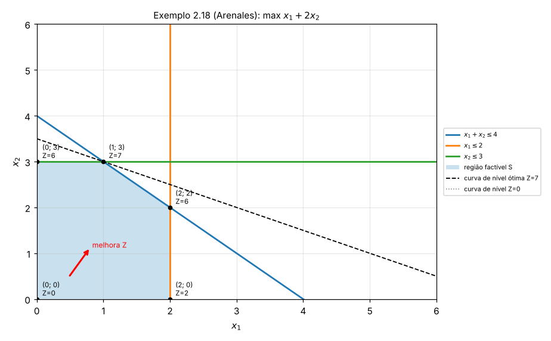
Exemplo: fábrica de rádios (handout da disciplina)¶
| Vértice | De onde vem | \(Z\) |
|---|---|---|
| \((0;\,0)\) | origem | \(0\) |
| \((24;\,0)\) | \(X_1=24\) e eixo | \(720\) |
| \((24;\,8)\) | \(X_1=24\) e \(X_1+2X_2=40\) | \(\mathbf{1.040}\) |
| \((8;\,16)\) | \(X_2=16\) e \(X_1+2X_2=40\) | \(880\) |
| \((0;\,16)\) | \(X_2=16\) e eixo | \(640\) |
Ótimo: 24 rádios padrão e 8 de luxo, lucro de R$ 1.040 por dia. As restrições ativas (que passam pelo ótimo) são \(X_1 \le 24\) e a dos operários. A linha de luxo tem folga de \(16-8=8\) rádios.
Gráfico dos rádios
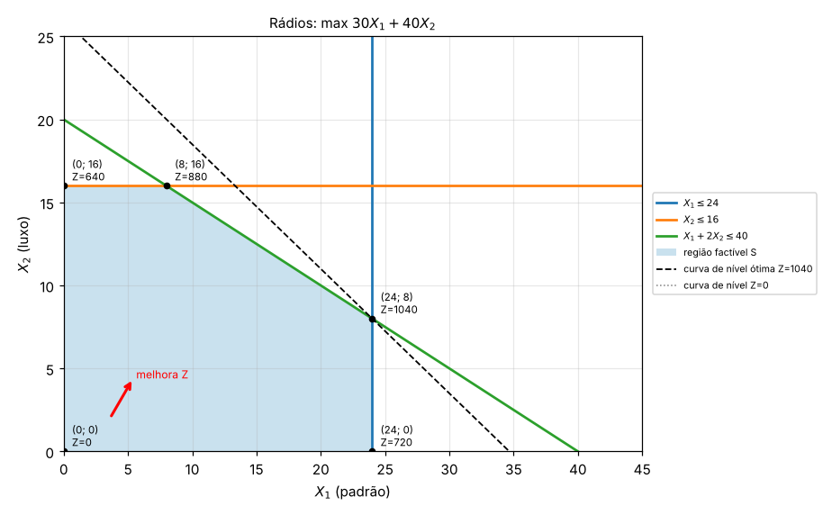
Exemplo 2.6 do livro: geladeiras¶
Um fabricante vende no máximo 1.500 geladeiras de luxo e 6.000 básicas por mês. Tem 25.000 homens-hora (luxo gasta 10 h, básica 8 h) e uma linha de montagem para 4.500 geladeiras. Lucro de $100 (luxo) e $50 (básica).
Interceptos: a mão de obra corta os eixos em \((2.500;\,0)\) e \((0;\,3.125)\); a linha de montagem em \((4.500;\,0)\) e \((0;\,4.500)\). A reta da linha de montagem fica inteira acima da de mão de obra dentro do quadrante útil, então ela não corta \(S\) (é uma restrição redundante). O mesmo vale para \(x_B \le 6.000\).
| Vértice | \(Z\) |
|---|---|
| \((0;\,0)\) | \(0\) |
| \((1.500;\,0)\) | \(150.000\) |
| \((1.500;\,1.250)\) | \(\mathbf{212.500}\) |
| \((0;\,3.125)\) | \(156.250\) |
Ótimo: 1.500 de luxo e 1.250 básicas, lucro de $212.500. Ativas: mercado de luxo e mão de obra.
Gráfico das geladeiras
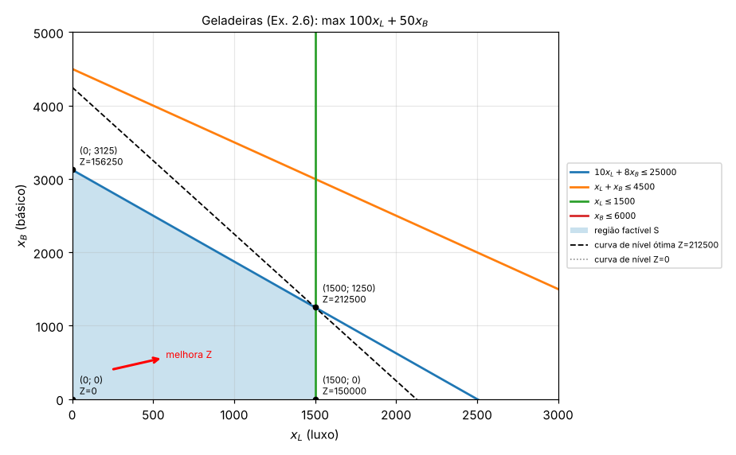
Minimização¶
Em minimização, a lógica se inverte: desloca-se a curva de nível contra o gradiente, e o ótimo é o vértice com menor \(Z\). Com restrições "\(\ge\)", a região factível costuma ficar "aberta para fora", longe da origem.
Pelo teste da origem, \(0 \ge 9\) é falso, então nas três primeiras restrições vale o lado oposto à origem.
| Vértice | De onde vem | \(Z\) |
|---|---|---|
| \((0;\,9)\) | \(3x_1+x_2=9\) e eixo \(x_2\) | \(18\) |
| \((2;\,3)\) | \(3x_1+x_2=9\) e \(x_1+x_2=5\) | \(\mathbf{14}\) |
| \((3;\,2)\) | \(x_1+x_2=5\) e \(x_1+3x_2=9\) | \(16\) |
| \((8;\,1/3)\) | \(x_1+3x_2=9\) e \(x_1=8\) | \(32{,}67\) |
| \((8;\,10)\) | \(x_1=8\) e \(x_2=10\) | \(52\) |
| \((0;\,10)\) | \(x_2=10\) e eixo | \(20\) |
Ótimo: \((2;\,3)\) com \(Z^*=14\).
Gráfico da minimização
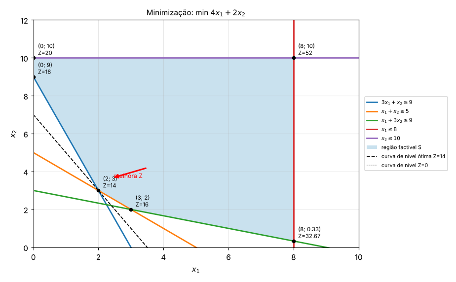
Os quatro resultados possíveis¶
O gráfico também mostra quando o problema não tem uma solução única. Na prova, é comum perguntarem qual caso aparece.
| Caso | Como aparece no gráfico | O que dizer |
|---|---|---|
| Ótimo único | A curva de nível toca \(S\) em um só vértice | Solução ótima única |
| Ótimos múltiplos | A curva de nível é paralela a um lado de \(S\) e encosta no lado inteiro | Infinitas soluções ótimas, todas com o mesmo \(Z\) (todo o segmento entre os dois vértices) |
| Ilimitado | \(S\) é aberta no sentido em que \(Z\) melhora; a curva de nível pode ser empurrada para sempre | \(Z \to +\infty\) (max) ou \(Z \to -\infty\) (min): normalmente indica restrição esquecida no modelo |
| Infactível | As restrições não têm nenhum ponto em comum; \(S\) é vazia | Não existe solução; as exigências são contraditórias |
Ótimos múltiplos: max \(Z=2x_1+2x_2\) com \(x_1+x_2 \le 6\), \(x_1 \le 4\), \(x_2 \le 5\)
Os vértices \((4;\,2)\) e \((1;\,5)\) dão ambos \(Z=12\). Isso acontece porque \(Z=2(x_1+x_2)\) é paralela à restrição \(x_1+x_2 \le 6\): qualquer ponto do segmento entre \((4;\,2)\) e \((1;\,5)\) é ótimo.
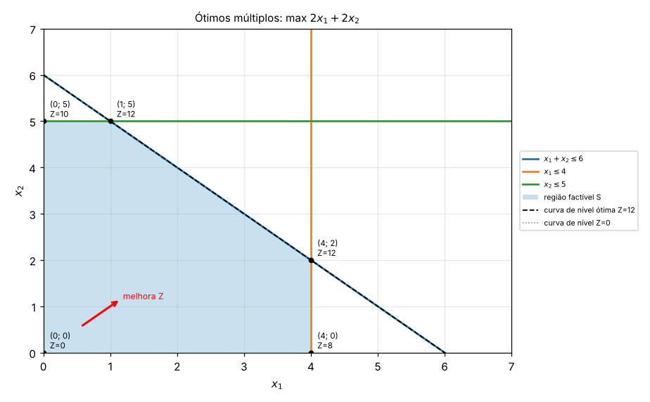
Ilimitado: max \(Z=x_1+x_2\) com \(-x_1+x_2 \le 2\) e \(x_1-2x_2 \le 2\)
A região factível segue para cima e para a direita sem fim; as curvas de nível \(Z=4, 8, 12, \dots\) sempre encontram pontos de \(S\). Não há ótimo finito.
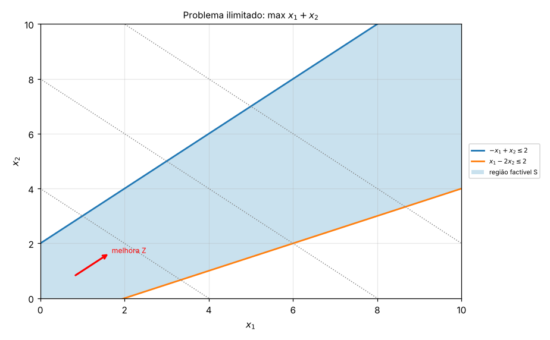
Infactível: \(x_1+x_2 \le 2\) e \(x_1+x_2 \ge 5\)
Não existe ponto com soma ao mesmo tempo no máximo 2 e no mínimo 5. O Solver responde "não foi possível encontrar uma solução viável". Curiosidade: o Exemplo 2.2 do livro (mistura de agregados para concreto) também é infactível com os dados apresentados. A faixa 76–152 mm obriga \(x_1 \ge 0{,}5\); com a outra metade, a faixa 2,4–19 mm pede brita comercial e a faixa 38–76 mm pede seixo, e não dá para atender às duas ao mesmo tempo. O próprio livro comenta, logo depois, que nem todo problema tem solução possível e que novas fontes de agregados poderiam ser consideradas.
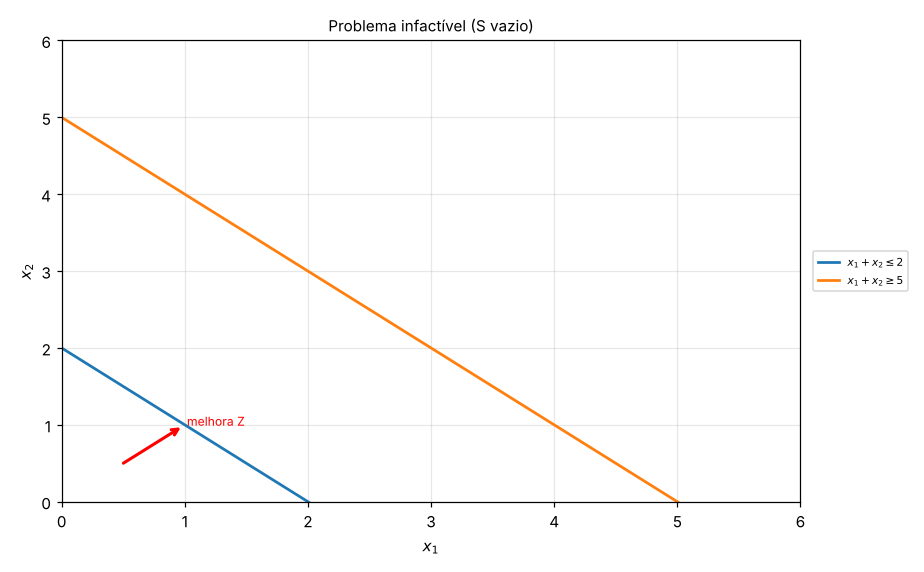
Vocabulário que cai junto¶
- Solução factível (viável): qualquer ponto de \(S\), ou seja, que respeita todas as restrições.
- Solução ótima: a solução factível com o melhor \(Z\).
- Restrição ativa (binding): aquela que vale com igualdade no ótimo (a reta passa pelo ponto ótimo). Tem folga zero e é o "gargalo".
- Folga: quanto sobra de um recurso no ótimo. Em \(\le\), folga \(=b-(\text{lado esquerdo})\).
- Restrição redundante: aquela que não corta \(S\) (removê-la não muda a região). Ex.: a linha de montagem no problema das geladeiras.
Exercícios de resolução gráfica¶
Para cada um: desenhe as retas, sombreie \(S\), liste os vértices e diga qual é o ótimo (ou qual dos casos especiais acontece). As respostas estão escondidas.
G1. max \(Z=3x_1+5x_2\); \(x_1 \le 4\); \(2x_2 \le 12\); \(3x_1+2x_2 \le 18\); \(x_1,x_2 \ge 0\).
Resposta G1
Retas: \(x_1=4\) (vertical), \(x_2=6\) (horizontal, vem de \(2x_2 \le 12\)), \(3x_1+2x_2=18\) com interceptos \((6;\,0)\) e \((0;\,9)\).
| Vértice | \(Z\) |
|---|---|
| \((0;\,0)\) | 0 |
| \((4;\,0)\) | 12 |
| \((4;\,3)\) | 27 |
| \((2;\,6)\) | 36 |
| \((0;\,6)\) | 30 |
Ótimo \((2;\,6)\), \(Z^*=36\). Vértice \((2;\,6)\): com \(x_2=6\), \(3x_1+12=18\), logo \(x_1=2\).
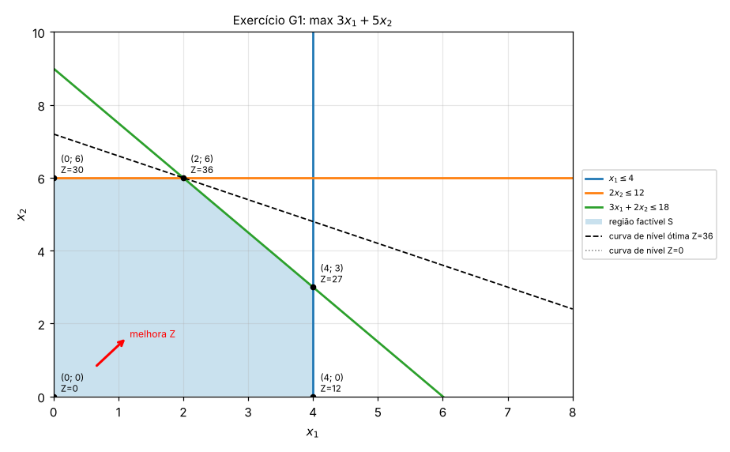
G2. Uma confecção faz camisas (\(x_1\)) e calças (\(x_2\)). O corte leva 1 h por camisa e 2 h por calça, com 40 h disponíveis. A costura leva 2 h por camisa e 1 h por calça, com 50 h. Vende-se no máximo 15 calças. Lucro de R$ 20 por camisa e R$ 30 por calça. Modele e resolva graficamente.
Resposta G2
| Vértice | De onde vem | \(Z\) |
|---|---|---|
| \((0;\,0)\) | origem | 0 |
| \((25;\,0)\) | costura e eixo | 500 |
| \((20;\,10)\) | corte e costura | 700 |
| \((10;\,15)\) | corte e mercado | 650 |
| \((0;\,15)\) | mercado e eixo | 450 |
Vértice corte × costura: da costura, \(x_2=50-2x_1\); no corte, \(x_1+100-4x_1=40\), logo \(x_1=20\) e \(x_2=10\). Ótimo: 20 camisas e 10 calças, lucro R$ 700. Sobram 5 calças de mercado.
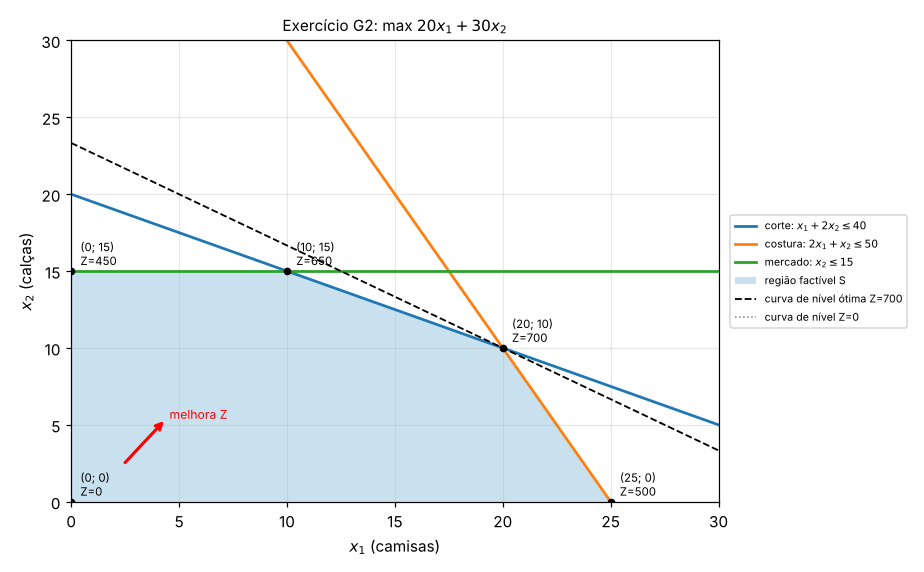
G3. Mistura de rações a custo mínimo: a ração A custa R$ 3/kg e a B R$ 4/kg. Exige-se proteína \(2x_A+x_B \ge 8\), fibra \(x_A+2x_B \ge 10\) e volume \(x_A+x_B \le 10\).
Resposta G3
| Vértice | \(Z = 3x_A+4x_B\) |
|---|---|
| \((2;\,4)\) | 22 |
| \((10;\,0)\) | 30 |
| \((0;\,10)\) | 40 |
| \((0;\,8)\) | 32 |
Vértice proteína × fibra: \(x_B=8-2x_A\) em \(x_A+2(8-2x_A)=10\), ou seja, \(16-3x_A=10\), logo \(x_A=2\) e \(x_B=4\). Ótimo: 2 kg de A e 4 kg de B, custo R$ 22.
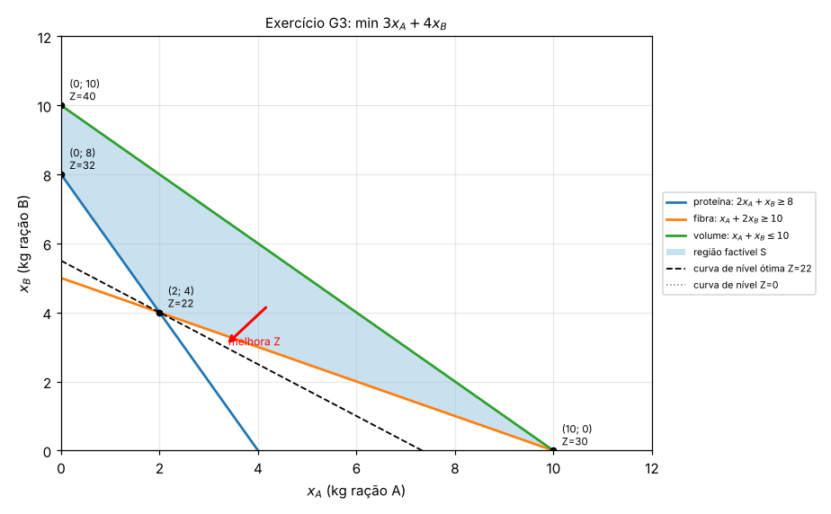
G4. max \(Z=2x_1+x_2\); \(x_1+x_2 \le 8\); \(x_1-x_2 \le 2\); \(x_2 \ge 2\); \(x_1 \ge 1\).
Resposta G4
| Vértice | \(Z\) |
|---|---|
| \((1;\,2)\) | 4 |
| \((4;\,2)\) | 10 |
| \((5;\,3)\) | 13 |
| \((1;\,7)\) | 9 |
Vértice \((5;\,3)\): somando \(x_1+x_2=8\) com \(x_1-x_2=2\) dá \(2x_1=10\). Ótimo \((5;\,3)\), \(Z^*=13\). Atenção: \(x_1-x_2 \le 2\) passa pela região de um jeito "inclinado"; o teste da origem (\(0 \le 2\), verdadeiro) mostra o lado certo.
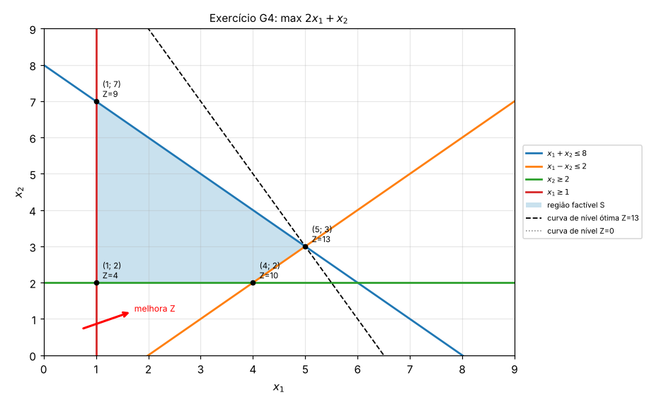
G5. max \(Z=4x_1+2x_2\); \(2x_1+x_2 \le 10\); \(x_1+x_2 \le 7\); \(x_2 \le 5\). Qual caso especial aparece?
Resposta G5
| Vértice | \(Z\) |
|---|---|
| \((0;\,0)\) | 0 |
| \((5;\,0)\) | 20 |
| \((3;\,4)\) | 20 |
| \((2;\,5)\) | 18 |
| \((0;\,5)\) | 10 |
Ótimos múltiplos: \(Z=4x_1+2x_2 = 2(2x_1+x_2)\) é paralela à restrição \(2x_1+x_2 \le 10\). Todo o segmento entre \((5;\,0)\) e \((3;\,4)\) é ótimo, com \(Z^*=20\).
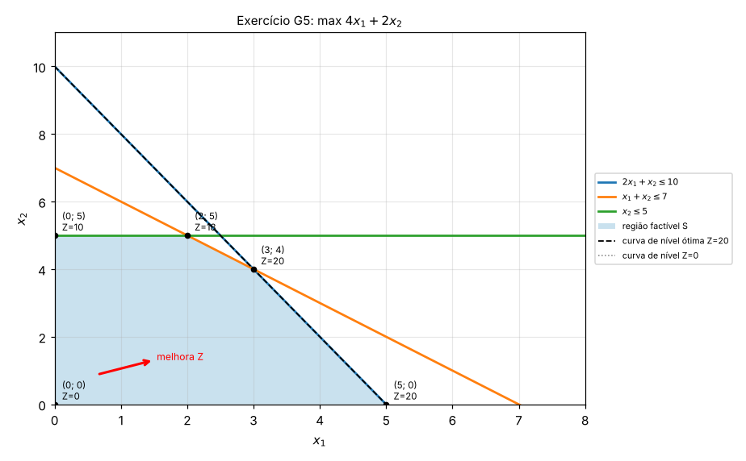
G6. min \(Z=5x_1+8x_2\); \(x_1+x_2 \ge 6\); \(x_1 \le 4\); \(x_2 \le 3\); \(x_1 \ge x_2\).
Resposta G6
A restrição \(x_1 \ge x_2\) vira \(x_1-x_2 \ge 0\): a reta \(x_1=x_2\) passa pela origem, então testa-se \((1;\,0)\): \(1 \ge 0\), verdadeiro, vale o lado abaixo da diagonal.
| Vértice | \(Z\) |
|---|---|
| \((4;\,2)\) | 36 |
| \((4;\,3)\) | 44 |
| \((3;\,3)\) | 39 |
Ótimo \((4;\,2)\) com \(Z^*=36\). A região é um triângulo pequeno.
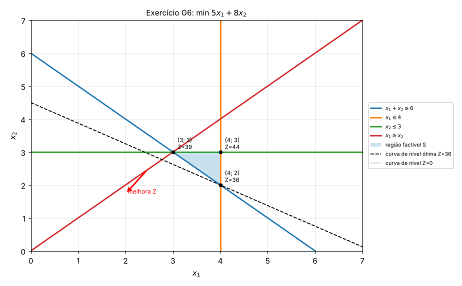
G7. Para o problema max \(Z=x_1+x_2\) com \(x_1+x_2 \ge 4\), \(x_1 \le 3\) e \(x_2 \ge 0\), o que acontece? E se a função objetivo fosse min \(Z=x_1+x_2\)?
Resposta G7
Em max, \(x_2\) não tem limite superior: a região sobe para sempre e \(Z \to \infty\). O problema é ilimitado (falta uma restrição, por exemplo de capacidade).
Em min, a curva de nível desce até encostar na reta \(x_1+x_2=4\), que é paralela a ela. Há ótimos múltiplos: todo o segmento de \((0;\,4)\) a \((3;\,1)\), com \(Z^*=4\). O mesmo conjunto de restrições pode ser ilimitado para um objetivo e ter ótimo para outro.
Tipos clássicos de problemas de otimização linear (Arenales et al., cap. 2)¶
Cada classe abaixo tem uma "forma" de modelo que se repete. Reconhecer a classe no enunciado já entrega metade da formulação.
Problemas de mistura¶
Combinar ingredientes para obter um produto com composição especificada, ao menor custo (ração, ligas metálicas, areias para filtro, concreto, sucos). Com \(x_j\) = quantidade do ingrediente \(j\) em uma unidade de mistura, \(a_{ij}\) = fração do componente \(i\) no ingrediente \(j\), \(b_i\) = fração exigida do componente \(i\) e \(c_j\) = custo do ingrediente \(j\):
Se o enunciado diz "pelo menos 30% de proteína", a igualdade vira \(\ge\) (Exemplo 2.1, a ração de osso, soja e peixe: ótimo com 50% de osso e 50% de peixe, custo $0,51/kg). Quando a quantidade total não é fixa, as porcentagens viram restrições do tipo \(0{,}04(x_1+\dots+x_4) \le x_1 \le 0{,}06(x_1+\dots+x_4)\) (exemplo da salada).
Transporte, transbordo e designação¶
Transporte: \(m\) origens com oferta \(a_i\), \(n\) destinos com demanda \(b_j\), custo unitário \(c_{ij}\):
O livro usa "\(=\)" na demanda; usar "\(\ge\)" dá o mesmo resultado quando se minimiza custo (ninguém manda a mais pagando frete).
Transbordo: há pontos intermediários (depósitos, CDs) que não produzem nem consomem. Para cada um, acrescenta-se a conservação de fluxo: \(\sum_i x_{ij} = \sum_k x_{jk}\) (tudo que entra, sai).
Designação: \(n\) tarefas para \(n\) pessoas, \(x_{ij} = 1\) se a pessoa \(i\) faz a tarefa \(j\):
Pela estrutura especial, trocar \(x_{ij} \in \{0,1\}\) por \(x_{ij} \ge 0\) ainda dá solução inteira.
Planejamento da produção¶
Mix de produção (um período): \(x_j\) = quantidade do produto \(j\), \(l_j\) = lucro unitário, \(a_{ij}\) = consumo do recurso \(i\), \(C_i\) = disponibilidade, \(d_j \le x_j \le v_j\) = mínimo de pedidos e máximo de mercado:
Exemplo 2.6 (geladeiras): max \(100x_L + 50x_B\) com \(10x_L + 8x_B \le 25.000\) (homens-hora), \(x_L + x_B \le 4.500\) (linha), \(0 \le x_L \le 1.500\), \(0 \le x_B \le 6.000\). Ótimo: 1.500 de luxo e 1.250 básicas.
Restrições de chance: quando a demanda \(D\) é incerta (normal, com média \(E(D)\) e desvio \(\sigma(D)\)), em vez de \(x \le E(D)\) exige-se que a probabilidade de superproduzir seja no máximo \(\alpha\): \(P(D \le x) \le \alpha\), que vira a restrição linear
Ex.: \(E(D)=1.500\), \(\sigma(D)=100\) e \(\alpha=0{,}10\) dão \(z_{0,10} = -1{,}282\) e \(x \le 1.372\).
Seleção de processos: o produto \(i\) pode ser feito por processos alternativos \(j \in J_i\) (máquinas, hora extra, terceirização), com custo \(c_{ij}\) e consumo \(a_{ijk}\) do recurso \(k\):
Dimensionamento de lotes (vários períodos, com estoque): \(x_{it}\) = produção, \(I_{it}\) = estoque no fim do período \(t\):
\(I_{it} \ge 0\) é o que garante o atendimento da demanda sem atraso. No caso multiestágio, a demanda de um componente \(j\) ganha a parcela interna \(\sum_i b_{ji}x_{it}\) (o que os itens que o usam consomem). Atrasos (backlogging) entram trocando \(I_{it}\) por \(I^+_{it} - I^-_{it}\). O estudo de caso de planejamento agregado da disciplina (Atividade 3 abaixo) é desta família.
Programação de projetos¶
\(t_i\) = instante de início da atividade \(i\). Cada precedência "\(D\) só começa depois que \(B\) (5 h) termina" vira \(t_D \ge t_B + 5\); o objetivo é minimizar o instante de término da última atividade. No exemplo dos pilares (8 atividades, de A a H), minimiza-se \(t_H + 3\) sujeito a \(t_C \ge t_A + 6\), \(t_D \ge t_B + 5\), \(t_D \ge t_C + 4\), \(t_F \ge t_E + 2\), \(t_F \ge t_D + 2\), \(t_G \ge t_F + 3\), \(t_H \ge t_G + 72\) e \(t_A, t_B, t_E \ge 0\).
Gestão financeira (fluxo de caixa)¶
Em cada período, o dinheiro é dividido entre ficar em caixa (juros \(\alpha\)) e uma aplicação menos líquida (juros \(\beta > \alpha\)), com custos de aplicação e resgate. Modela-se como uma rede de fluxos: em cada nó (período e opção), o que entra = o que sai. O objetivo é maximizar o dinheiro no fim do horizonte. No Exemplo 2.9 do livro (3 períodos), o retorno final ótimo é de $3,27.
Meio ambiente¶
Uma fábrica desvia água do rio e escolhe quanto tratar em cada um de 3 tratamentos (\(x_i\) milhões de litros), com custo \(c_i\) e poluentes remanescentes \(a_i\) e \(b_i\):
Corte e empacotamento¶
Barras (ou bobinas) de tamanho \(L\) são cortadas em itens de tamanhos \(l_1,\dots,l_m\) com demandas \(b_1,\dots,b_m\). Cada padrão de corte \(j\) é um vetor \(a_j = (a_{1j},\dots,a_{mj})\) com quantos itens de cada tipo saem de uma barra; é válido se \(l_1a_{1j} + \dots + l_ma_{mj} \le L\). Com \(x_j\) = barras cortadas no padrão \(j\):
Quando a demanda é em toneladas, a integralidade pode ser relaxada (ex.: papel: 3,5 toneladas cortadas num padrão é uma resposta com sentido).
Ajuste de curvas, controle ótimo e funções lineares por partes¶
Funções que não são lineares, mas podem ser linearizadas:
- Soma dos módulos dos erros \(\sum|\varepsilon_i|\): escreve-se \(\varepsilon_i = \varepsilon_i^+ - \varepsilon_i^-\) com \(\varepsilon_i^+, \varepsilon_i^- \ge 0\) e minimiza-se \(\sum(\varepsilon_i^+ + \varepsilon_i^-)\). No Exemplo 2.10, ajustar \(y = ax + b\) aos pontos \((0,-1), (1,0), (2,1), (3,1)\) vira um problema linear.
- Mínimo do máximo \(\min \max|y_t|\): cria-se \(z\) com \(-z \le y_t \le z\) e minimiza-se \(z\) (controle ótimo, ex.: aceleração de um foguete).
- Penalidade de estoque diferente para sobra e falta: \(I_{it} = I^+_{it} - I^-_{it}\), com custos \(h^+\) e \(h^-\).
Hipóteses de linearidade (Seção 2.3)¶
| Hipótese | O que supõe | Quando falha |
|---|---|---|
| Aditividade | O todo é a soma das partes | Ingredientes que reagem: 1 L de água + 0,1 L de açúcar não dá 1,1 L |
| Proporcionalidade | Se 1 kg tem 200 g de um componente, 3 kg têm 600 g; \(x_j\) unidades custam \(c_jx_j\) | Descontos por volume, saturação de mercado, custos fixos |
| Fracionamento | Valores fracionários fazem sentido | Número de máquinas ou veículos: precisa de otimização inteira |
Bom senso no fracionamento: se a variável é o número de peças e o ótimo dá 331,4, produzir 331 ou 332 é aceitável e não vale tratar como inteiro. Já para comprar 1,4 caminhão, o arredondamento distorce.
Forma padrão e transformações (Seção 2.4)¶
A forma padrão é: minimizar, restrições de igualdade e variáveis não negativas.
\(A\) é a matriz \(m \times n\) dos coeficientes (matriz tecnológica), \(c\) o vetor de custos, \(b\) o vetor de recursos. Qualquer problema linear pode ser reescrito nessa forma:
| Situação | Transformação | Exemplo |
|---|---|---|
| Maximizar \(f\) | Minimizar \(-f\) | max \(2x_1 - x_2 + 4x_3\) vira min \(-2x_1 + x_2 - 4x_3\) |
| Restrição \(\le\) | Soma uma variável de folga \(x_k \ge 0\) | \(3x_1 + 4x_2 - x_3 \le 7\) vira \(3x_1 + 4x_2 - x_3 + x_4 = 7\) |
| Restrição \(\ge\) | Subtrai uma variável de excesso \(x_k \ge 0\) | \(3x_1 + 4x_2 - x_3 \ge 7\) vira \(3x_1 + 4x_2 - x_3 - x_4 = 7\) |
| Variável livre (sinal irrestrito) | \(x_i = x_i^+ - x_i^-\), com \(x_i^+, x_i^- \ge 0\) | \(x_1\) livre vira \(x_1^+ - x_1^-\) em todo o modelo |
Exemplo 2.15 do livro
min \(2x_1 - 3x_2 + 3x_3\) com \(x_1 + 2x_2 - x_3 \ge 3\), \(-2x_1 + x_2 + x_3 \le -1\) e \(x \ge 0\) fica, na forma padrão:
A folga tem significado: no ótimo, uma folga zero indica que a restrição está ativa (o recurso é gargalo).
Exercícios de modelagem (estilo da prova)¶
Exercícios no mesmo formato dos estudos de caso da disciplina (campanha de publicidade, VVC, refinaria): um enunciado em texto corrido, uma tabela de dados e o pedido de formular o modelo analítico e discutir outras restrições e fatores.
O que o professor cobra
O foco da avaliação é o caminho: definir bem as variáveis de decisão, escrever a função objetivo e traduzir cada regra do enunciado em uma restrição. O número final sai do Solver. Por isso, cada resposta abaixo mostra primeiro a formulação completa; o resultado numérico aparece só no fim, como conferência para quem rodar no Solver.
Roteiro de 5 passos para qualquer enunciado¶
1. Ache a pergunta. Procure o verbo da decisão: "quanto produzir", "onde investir", "quantas veiculações", "quanto transportar". O "quanto de quê" vira a variável de decisão.
2. Defina as variáveis por escrito, com unidade. Ex.: "\(x_1\) = número de veiculações na TV em horário normal". Se houver dois índices (origem e destino, produto e mês), use \(x_{ij}\) e diga o que é cada índice. Uma variável mal definida derruba o modelo inteiro.
3. Escreva a função objetivo. "Maximizar lucro, clientes, retorno" ou "minimizar custo, distância, tempo". É sempre \(\sum (\text{contribuição unitária}) \times (\text{variável})\).
4. Transforme cada frase com número em restrição. Leia o enunciado frase por frase e risque cada limite usado. Use o dicionário abaixo.
5. Feche com o domínio. Não-negatividade (\(x \ge 0\)), limites como \(0 \le x \le 1\) (frações) e, se fizer sentido, integralidade ("\(x\) inteiro").
Dicionário: do português para a restrição¶
| Frase no enunciado | Restrição |
|---|---|
| "não pode gastar mais de 800 mil", "no máximo", "até", "não exceder", "disponível" | \(\ldots \le 800.000\) |
| "no mínimo", "pelo menos", "não menos que", "atender a demanda" | \(\ldots \ge b\) |
| "exatamente", "toda a produção", "deve ser igual" | \(\ldots = b\) |
| "entre 5 e 10" | duas restrições: \(x \ge 5\) e \(x \le 10\) |
| "gastar no máximo R$ 500 mil com TV" | só as variáveis de TV: \(40.000x_1 + 75.000x_2 \le 500.000\) |
| "comum deve ser no mínimo 16 vezes a verde" | \(x_c \ge 16x_v\), ou \(x_c - 16x_v \ge 0\) |
| "no máximo 40% do total em ações" | \(x_a \le 0{,}4(x_a + x_b + \dots)\), ou seja, \(0{,}6x_a - 0{,}4x_b - \dots \le 0\) |
| "o produto A deve ser pelo menos o dobro de B" | \(x_A \ge 2x_B\) |
| "a participação deve ser a mesma em todos os anos" | uma variável (a fração) multiplica o desembolso de cada ano |
| "pode ser fracionado", "participação" | \(0 \le x \le 1\) (fração) |
| "número de veiculações, peças, pessoas" | \(x\) inteiro (se arredondar distorcer) |
| "estoque do mês passa para o mês seguinte" | balanço: \(I_t = I_{t-1} + \text{produção}_t - \text{demanda}_t\) |
| "o que entra em um depósito é o que sai" (transbordo) | \(\sum \text{entradas} = \sum \text{saídas}\) |
Armadilha das porcentagens
"No máximo 40% do total" não é \(x_a \le 0{,}4\). É \(x_a \le 0{,}4 \times (\text{soma de todas as variáveis})\). Passando tudo para a esquerda, fica linear: \(0{,}6x_a - 0{,}4(x_b+x_c+x_d) \le 0\). Só vira \(x_a \le 0{,}4 \cdot T\) quando o total \(T\) é um número fixo (por exemplo, "investir exatamente 1 milhão").
Checklist para "discuta outras restrições e fatores"¶
Quase toda prova termina pedindo isso. Em vez de decorar respostas, passe pelas categorias:
- Incerteza nos dados: demanda, preço ou audiência são previsões. Saída: análise de sensibilidade, cenários ou restrições de chance (Arenales, Seção 2.2.3).
- Não linearidades: saturação/retornos decrescentes (a 10ª veiculação rende menos que a 1ª), descontos por volume, custos fixos (preparar máquina, contratar).
- Integralidade: veiculações, pessoas e máquinas são inteiros, o que vira programação inteira.
- Interação entre variáveis: sobreposição de público, produtos que competem pelo mesmo mercado, projetos dependentes ("só faço D se fizer E").
- Tempo: sazonalidade, vários períodos, estoque e caixa passando de um período para outro.
- Recursos esquecidos: mão de obra, armazenagem, transporte, capital de giro.
- Políticas e regras: diversificação mínima, limites legais e ambientais, contratos mínimos.
- Outros objetivos: risco, imagem, qualidade, que levam a multicritério ou a uma restrição do tipo "risco \(\le\) limite".
M1. Marcenaria (mix de produção)¶
A Marcenaria Pau-Brasil fabrica mesas, cadeiras e estantes. Por semana, há 200 m² de madeira, 240 h de carpintaria e 150 h de acabamento. Uma mesa usa 3 m² de madeira, 4 h de carpintaria e 2 h de acabamento, e dá lucro de R$ 120. Uma cadeira usa 1 m², 1,5 h e 0,5 h, com lucro de R$ 30. Uma estante usa 4 m², 3 h e 3 h, com lucro de R$ 150. O mercado absorve no máximo 20 estantes por semana, e como as mesas são vendidas em conjunto, deve-se fabricar pelo menos 4 cadeiras para cada mesa.
Formule o modelo que maximize o lucro semanal. Discuta outras restrições e fatores.
Resolução M1
Variáveis: \(x_1\) = mesas, \(x_2\) = cadeiras, \(x_3\) = estantes produzidas por semana.
Função objetivo:
Restrições:
A regra "4 cadeiras por mesa" é a que mais gente erra: é \(x_2 \ge 4x_1\) (cadeiras são 4 vezes as mesas), e não \(4x_2 \ge x_1\). Teste com números: 5 mesas exigem pelo menos 20 cadeiras, e \(20 \ge 4 \cdot 5\) confere.
Outros fatores: estoque de produtos acabados, prazo de secagem do verniz, demanda máxima de mesas e cadeiras, perdas de madeira no corte, horas extras.
Conferência (Solver): contínuo, \(x \approx (17{,}1;\ 68{,}6;\ 20)\) e \(Z \approx\) R$ 7.114. Inteiro, \(x=(17;\ 69;\ 20)\) e \(Z=\) R$ 7.110. Madeira e estantes ficam no limite.
M2. Dieta hospitalar (mistura, minimizar custo)¶
A nutricionista de um hospital monta o cardápio diário de um paciente com arroz, feijão, frango e leite, medidos em porções. A dieta precisa ter pelo menos 70 g de proteína, pelo menos 14 mg de ferro e entre 2.000 e 2.600 kcal. Por restrições clínicas, o paciente não pode tomar mais de 3 porções de leite, comer mais de 6 de arroz nem mais de 4 de feijão.
| Por porção | Arroz | Feijão | Frango | Leite |
|---|---|---|---|---|
| Proteína (g) | 3 | 8 | 25 | 8 |
| Ferro (mg) | 1 | 2 | 2,5 | 1,5 |
| Energia (kcal) | 130 | 140 | 200 | 120 |
| Custo (R$) | 0,40 | 0,60 | 2,50 | 1,20 |
Formule o modelo de menor custo. Discuta outras restrições e fatores.
Resolução M2
Variáveis: \(x_A, x_F, x_G, x_L\) = porções diárias de arroz, feijão, frango e leite.
"Entre 2.000 e 2.600 kcal" gera duas restrições com o mesmo lado esquerdo.
Outros fatores: palatabilidade e variedade (o Solver tende a repetir sempre a mesma combinação), outros nutrientes (sódio, gordura, fibras), porções inteiras ou meias porções, preferências do paciente.
Conferência: \((6;\ 4;\ 1{,}5;\ 3)\), custo R$ 12,15 por dia. A energia fica exatamente em 2.000 kcal (restrição ativa) e a proteína sobra (111,5 g).
M3. Campanha de marketing digital¶
Uma loja on-line tem R$ 100 mil para uma campanha em Instagram, YouTube, Google Ads e outdoor. Quer atingir o maior número possível de pessoas, com pelo menos 500 mil jovens (18–24 anos). Por política de diversificação, no máximo 40% da verba pode ir para o Instagram e no máximo 20% para o Google Ads. Já existe um contrato de outdoor que obriga a gastar pelo menos R$ 10 mil nesse meio.
| Para cada R$ 1 mil investido | YouTube | Google Ads | Outdoor | |
|---|---|---|---|---|
| Pessoas atingidas (mil) | 12 | 9 | 7 | 4 |
| Jovens atingidos (mil) | 9 | 6 | 3 | 1 |
Formule o modelo. Discuta outras restrições e fatores.
Resolução M3
Aqui a variável natural é quanto dinheiro vai para cada meio (e não quantas veiculações, como no estudo de caso da sala), porque os dados vêm "por R$ 1 mil investido".
Variáveis: \(x_I, x_Y, x_G, x_O\) = valor investido (em R$ mil) em cada meio.
Linearizando as porcentagens: \(0{,}6x_I - 0{,}4x_Y - 0{,}4x_G - 0{,}4x_O \le 0\) e \(-0{,}2x_I - 0{,}2x_Y + 0{,}8x_G - 0{,}2x_O \le 0\).
Outros fatores: a mesma pessoa vista em vários meios (alcance duplicado), saturação, custo de criar os anúncios, conversão em vendas (atingir não é vender), sazonalidade.
Conferência: \(x_I=40\), \(x_Y=50\), \(x_G=0\), \(x_O=10\), alcance de 970 mil pessoas. O limite de 40% do Instagram e o contrato de outdoor ficam ativos.
M4. Carteira de investimentos¶
Um investidor vai aplicar exatamente R$ 1 milhão em ações, CDB, Tesouro Direto e fundos imobiliários (FII), buscando o maior retorno anual esperado. O assessor impõe: no máximo 40% em ações; pelo menos 30% em Tesouro; renda fixa (CDB + Tesouro) somando pelo menos 40%; o valor em FII não pode passar do valor em ações; e o risco médio ponderado da carteira deve ser no máximo 1,6.
| Ações | CDB | Tesouro | FII | |
|---|---|---|---|---|
| Retorno esperado ao ano | 14% | 11% | 10% | 12% |
| Índice de risco | 3,0 | 1,0 | 0,5 | 2,0 |
Resolução M4
Variáveis: \(x_A, x_C, x_T, x_F\) = valor aplicado (R$ mil) em cada opção.
Como o total é fixo (1.000), as porcentagens viram números diretamente. Se o enunciado dissesse "até 1 milhão", seria preciso usar a forma geral \(x_A \le 0{,}4(x_A+x_C+x_T+x_F)\). O risco médio é uma média ponderada; multiplicando pelo total, fica linear.
Outros fatores: liquidez (resgate antes do prazo), impostos e taxas, correlação entre os ativos (o risco de uma carteira não é só a média dos riscos), horizonte de investimento, perfil do investidor.
Conferência: ações 375, CDB 325, Tesouro 300, FII 0; retorno de R$ 118,25 mil (11,8%). O risco (exatamente 1,6) e o piso do Tesouro ficam ativos.
M5. Fundo de capital semente (estilo VVC)¶
O fundo Semente Nordeste tem R$ 80 milhões para aportes neste ano e R$ 70 milhões no próximo. Pode comprar participações fracionadas em cinco startups; se comprar uma fração neste ano, precisa aportar a mesma fração da parcela do ano seguinte. Por um acordo de parceria, a participação na startup D não pode ser maior que a participação na startup E.
| Startup | Aporte ano 1 | Aporte ano 2 | Lucro esperado |
|---|---|---|---|
| A | 20 | 25 | 30 |
| B | 40 | 15 | 45 |
| C | 10 | 20 | 20 |
| D | 30 | 10 | 35 |
| E | 15 | 30 | 25 |
(valores em R$ milhões)
Resolução M5
Variáveis: \(x_A, \dots, x_E\) = fração (de 0 a 1) da rodada de cada startup comprada pelo fundo. Uma única variável por startup garante a regra "mesma participação nos dois anos".
Outros fatores: sobra de um ano não usada no outro (poderia virar variável de caixa), risco de cada startup, participação mínima para ter assento no conselho, valor do dinheiro no tempo (lucros em anos diferentes).
Conferência: \(x_A=1\), \(x_B \approx 0{,}946\), \(x_C=1\), \(x_D=x_E\approx 0{,}270\); lucro \(\approx\) R$ 108,8 milhões. Os dois orçamentos e a parceria ficam ativos.
M6. Mistura de sucos¶
Uma indústria quer produzir 1.000 litros de um suco misto a partir de concentrados de laranja, maçã e uva, com o menor custo. O teor de açúcar do produto final deve ficar entre 11% e 13%, a vitamina C deve ser de pelo menos 25 mg por litro e, para poder estampar "sabor laranja" no rótulo, a laranja deve ser pelo menos 40% da mistura.
| Laranja | Maçã | Uva | |
|---|---|---|---|
| Custo (R$/L) | 2,00 | 1,20 | 1,60 |
| Açúcar | 10% | 12% | 16% |
| Vitamina C (mg/L) | 50 | 5 | 10 |
Resolução M6
Variáveis: \(x_L, x_M, x_U\) = litros de cada concentrado na mistura de 1.000 L.
É o mesmo esquema do problema da ração do livro (Exemplo 2.1): "quantidade do componente \(i\) na mistura \(= \sum_j a_{ij}x_j\)", comparada com a exigência. Supõe aditividade (o açúcar da mistura é a soma dos açúcares), uma das três hipóteses de linearidade.
Outros fatores: disponibilidade de cada concentrado, sabor (testes sensoriais), validade, custo de água/embalagem, variação do teor de açúcar entre safras.
Conferência: laranja \(\approx 444\) L, maçã \(\approx 556\) L, uva 0; custo \(\approx\) R$ 1.555,56. A vitamina C fica ativa.
M7. Transporte de grãos¶
Três fazendas (F1, F2, F3) produzem 200, 300 e 250 toneladas de milho. Três cooperativas (C1, C2, C3) precisam de 250, 200 e 300 toneladas. O frete por tonelada (R$) está abaixo. Formule o modelo de menor custo.
| C1 | C2 | C3 | |
|---|---|---|---|
| F1 | 8 | 6 | 10 |
| F2 | 9 | 12 | 13 |
| F3 | 14 | 9 | 16 |
Resolução M7
Variáveis: \(x_{ij}\) = toneladas enviadas da fazenda \(i\) à cooperativa \(j\) (\(i,j = 1,2,3\)), nove variáveis.
Regra de bolso: linhas da tabela = restrições de oferta (soma na horizontal), colunas = restrições de demanda (soma na vertical). Aqui a oferta total (750) é igual à demanda total (750), então o problema é balanceado e as ofertas também serão usadas por inteiro.
Outros fatores: capacidade dos caminhões, estradas interditadas na chuva, custo fixo por viagem, prazos de entrega, perdas no transporte.
Conferência: F1→C3: 200; F2→C1: 250; F2→C3: 50; F3→C2: 200; F3→C3: 50. Custo R$ 7.500.
M8. Designação de tarefas¶
Uma software house tem 4 programadores e 4 tarefas urgentes. Cada programador fica com exatamente uma tarefa e cada tarefa com exatamente um programador. A tabela mostra o tempo estimado (horas). Minimize o tempo total.
| T1 | T2 | T3 | T4 | |
|---|---|---|---|---|
| Ana | 14 | 5 | 8 | 7 |
| Bruno | 2 | 12 | 6 | 5 |
| Carla | 7 | 8 | 3 | 9 |
| Davi | 2 | 4 | 6 | 10 |
Resolução M8
Variáveis: \(x_{ij} = 1\) se o programador \(i\) fica com a tarefa \(j\), e \(0\) caso contrário (variável binária).
É o problema de designação do livro (Seção 2.2.2): um caso especial do transporte com ofertas e demandas iguais a 1. O livro observa que, mesmo trocando \(x_{ij} \in \{0,1\}\) por \(x_{ij} \ge 0\), a solução ótima sai inteira.
Conferência: Ana→T2 (5), Bruno→T4 (5), Carla→T3 (3), Davi→T1 (2); total de 15 h.
M9. Escala de atendentes (cobertura)¶
Um call center 24 h divide o dia em 6 faixas de 4 horas. Cada atendente trabalha um turno de 8 horas seguidas, que pode começar no início de qualquer faixa. O número mínimo de atendentes em cada faixa é:
| Faixa | 0–4h | 4–8h | 8–12h | 12–16h | 16–20h | 20–24h |
|---|---|---|---|---|---|---|
| Mínimo | 4 | 8 | 14 | 12 | 10 | 6 |
Quantos atendentes devem começar em cada faixa para usar o menor número total de pessoas?
Resolução M9
Variáveis: \(x_k\) = número de atendentes que começam o turno no início da faixa \(k\) (\(k=1,\dots,6\)).
O ponto-chave: quem está trabalhando na faixa \(k\) é quem começou na faixa \(k\) ou na anterior (porque o turno dura duas faixas).
O erro mais comum é escrever \(x_k \ge \text{mínimo}_k\), esquecendo que um turno cobre duas faixas.
Outros fatores: intervalos de almoço, limite de turnos noturnos por pessoa, folgas semanais, custo diferente para turno da madrugada, absenteísmo.
Conferência: mínimo de 28 atendentes (por exemplo, \(x = (4, 4, 10, 2, 8, 0)\)). Há outras escalas com o mesmo total.
M10. Produção em três meses (planejamento com estoque)¶
Uma fábrica de chocolates precisa atender a demanda de 1.000, 1.500 e 2.000 caixas em outubro, novembro e dezembro. Em cada mês, pode produzir até 1.200 caixas em horário normal (R$ 10 por caixa) e até mais 400 em hora extra (R$ 14 por caixa). Caixas produzidas antes podem ficar em estoque, ao custo de R$ 2 por caixa por mês (cobrado sobre o estoque no fim de cada mês). Há 100 caixas em estoque no início de outubro.
Resolução M10
Variáveis (para \(t = 1, 2, 3\)): \(x_t\) = caixas em horário normal no mês \(t\); \(h_t\) = caixas em hora extra; \(I_t\) = estoque no fim do mês \(t\).
É o modelo de dimensionamento de lotes do livro (Seção 2.2.3): "estoque de hoje = estoque de ontem + produção − demanda". Exigir \(I_t \ge 0\) é o que garante que a demanda é atendida sem atraso.
Outros fatores: capacidade do depósito, validade do chocolate, custo de contratar/demitir, atraso permitido com multa (estoque negativo, backlogging).
Conferência: produção normal no máximo todo mês, hora extra de 400 em novembro e dezembro; estoques de 300 e 400 caixas; custo de R$ 48.600. Compensa antecipar em outubro (custo 10 + 2 de estoque = 12) em vez de fazer hora extra (14).
M11. Planejamento agrícola¶
Um produtor tem 100 hectares para plantar soja, milho e feijão. Ele dispõe de 650 mil m³ de água e 1.000 dias-homem de trabalho na safra. Por contrato com uma granja, o milho deve ocupar pelo menos 20% da área plantada, e o feijão não pode passar de 30 ha (limite de armazenagem).
| Por hectare | Soja | Milho | Feijão |
|---|---|---|---|
| Lucro (R$) | 1.800 | 1.500 | 2.200 |
| Água (mil m³) | 6 | 8 | 5 |
| Mão de obra (dias) | 10 | 6 | 15 |
Resolução M11
Variáveis: \(x_S, x_M, x_F\) = hectares plantados de cada cultura.
Note que a regra fala em "área plantada", que pode ser menor que 100 ha. Por isso a porcentagem usa a soma das variáveis, e não o número 100. Linearizada: \(-0{,}2x_S + 0{,}8x_M - 0{,}2x_F \ge 0\).
Outros fatores: rotação de culturas, risco climático (cenários de chuva), preço futuro das commodities, custo de sementes e adubo, crédito rural.
Conferência: soja 32,5 ha, milho 37,5 ha, feijão 30 ha; lucro de R$ 180.750. Terra, mão de obra e o limite de feijão ficam ativos.
M12. Aplicação de caixa em dois anos (gestão financeira)¶
Uma empresa tem R$ 100 mil hoje (ano 0) e quer ter o máximo de dinheiro no fim do ano 2. Opções:
- A: aplicar no ano 0 e receber 30% a mais no fim do ano 2 (no máximo R$ 60 mil);
- B: aplicação de 1 ano que rende 15%, disponível no ano 0 e no ano 1;
- C: aplicar no ano 1 e receber 25% a mais no fim do ano 2 (no máximo R$ 50 mil).
Dinheiro não aplicado fica parado no caixa, sem render.
Resolução M12
Variáveis: \(A_0\), \(B_0\), \(B_1\), \(C_1\) = valores aplicados em cada opção (o índice é o ano da aplicação); \(S_0, S_1\) = caixa parado no ano 0 e no ano 1.
É uma versão pequena do modelo de fluxo de caixa do livro (Seção 2.2.5): em cada período, entradas = saídas.
Outros fatores: impostos e taxas de resgate, risco de cada aplicação, necessidade de caixa mínimo para despesas (restrição \(S_t \ge\) reserva), retiradas ao longo do caminho.
Conferência: \(B_0=100\), \(B_1=65\), \(C_1=50\) (nada em A); total de R$ 137,25 mil. Contraintuitivo: A rende 30%, mas prende o dinheiro por 2 anos; B + C rende \(1{,}15 \times 1{,}25 \approx 1{,}44\).
Exemplos do livro (Arenales) para treinar só a formulação¶
Os enunciados abaixo são do capítulo indicado pelo professor. Tente escrever variáveis, objetivo e restrições antes de abrir a resposta.
L1. Ração (Exemplo 2.1). A ração é feita de farinha de osso, soja e peixe, e precisa ter pelo menos 30% de proteína e 50% de cálcio. Osso: 20% proteína, 60% cálcio, $0,56/kg. Soja: 50%, 40%, $0,81/kg. Peixe: 40%, 40%, $0,46/kg.
Resposta L1
\(x_j\) = kg do ingrediente \(j\) em 1 kg de ração.
Ótimo do livro: 50% osso e 50% peixe, custo $0,51/kg.
L2. Bebidas (Exemplo 2.3). Araraquara tem 800 unidades e São José dos Campos 1.000. São Paulo, Belo Horizonte e Rio precisam de 500, 400 e 900. Custos: de Araraquara 4, 2, 5; de S. J. Campos 11, 7, 4.
Resposta L2
Conferência no Solver: custo 6.900 (Araraquara manda 500 a SP e 300 a BH; S. J. Campos manda 100 a BH e 900 ao Rio).
L3. Transbordo (Exemplo 2.5). Mesmo problema, mas os mercados só recebem dos depósitos Campinas (3) e Barra Mansa (4). Custos fábrica→depósito: Araraquara 1 e 3; S. J. Campos 1 e 2. Depósito→mercado: Campinas 1, 3, 3; Barra Mansa 3, 4, 1.
Resposta L3
Além de oferta e demanda, cada depósito ganha uma restrição de conservação de fluxo (tudo que entra, sai):
L4. Salada (texto da Seção 2.2.1). Salada com maionese, salsa, maçã e batata (\(x_1\) a \(x_4\), em gramas), com 100 g a 200 g no total e composição de 4–6% de maionese, 4–6% de salsa, 30–40% de maçã e 50–60% de batata.
Resposta L4
É o exemplo do livro de porcentagem sobre um total variável, a mesma armadilha da M3 e da M11.
L5. Vigas pré-moldadas (Exemplo 2.7). Dois tipos de viga, 3 semanas, demanda (item 1: 100, 90, 120; item 2: 40, 50, 80), 40 h por semana (item 1 gasta 15 min e item 2 gasta 20 min), custos de produção 20, 20, 30 para os dois itens e custos de estoque 2 e 3 (item 1) e 2,5 e 3,5 (item 2). Estoques inicial e final nulos.
Resposta L5
\(x_{it}\) = vigas do tipo \(i\) produzidas na semana \(t\); \(I_{it}\) = estoque no fim da semana \(t\).
Os minutos foram passados para horas (15 min = 1/4 h; 20 min = 1/3 h), para ficarem na mesma unidade das 40 h. Atenção a uma inconsistência do livro: a Tabela 2.6 traz demanda 50 para o item 2 na semana 2, mas as equações do livro usam 70. Aqui foi usado o valor da tabela.
Ao rodar no Solver com os dados da tabela, o problema dá infactível: a demanda total pede \(310 \cdot \tfrac14 + 170 \cdot \tfrac13 \approx 134\) h, e só há \(3 \times 40 = 120\) h. Bom exemplo de por que conferir os totais antes de confiar no modelo.
Teoria da Decisão¶
Conteúdo de Teoria da Decisão da disciplina, com a matemática passo a passo. Base: handout "Teoria da Decisão" do Prof. Adiel Filho (versão 2022.1) e a bibliografia indicada nele: Howard & Abbas (2015); Raiffa (1977); Campello de Souza (2007); Hillier & Lieberman (2014); Berger (1980). Para praticar, veja os exercícios no fim desta seção.
Mapa da seção
- O que é decisão e quais são os elementos de um problema de decisão.
- Decisão sob incerteza (sem probabilidades): critérios maximax, maximin, Laplace, Hurwicz e Savage.
- Decisão sob risco (com probabilidades): valor esperado e valor da informação.
- Teoria da utilidade de von Neumann-Morgenstern: axiomas, construção da função utilidade (exemplo das frutas) e utilidade para dinheiro.
- Árvores de decisão e o método fold back, com o exemplo do medicamento para diabetes.
Os itens 1, 4 e 5 seguem o handout. Os critérios do item 2 e as fórmulas de valor esperado e valor da informação do item 3 vêm da bibliografia (Hillier & Lieberman, Raiffa); o handout cita "decisão sob incerteza", "decisão sob risco" e "value of information", mas não detalha os cálculos.
1. O que é decisão¶
Decisão é o "curso de ação escolhido pela pessoa, como o meio mais efetivo à sua disposição, para alcançar os objetivos pretendidos", ou a "escolha entre duas ou mais alternativas que envolve obrigatoriamente a alocação de recursos" (Howard & Abbas, 2015). Decidir é, no fundo, um problema de otimização: escolher a melhor alternativa.
A teoria da decisão estuda como decidir quando é incerto o que vai acontecer:
"A teoria da decisão é um meio de se agir com lógica em situações incertas. E, segundo esta teoria, uma boa decisão deverá ser uma função lógica daquilo que se quer, daquilo que se sabe e daquilo que se pode fazer." — Souza (2007)
| Elemento | Significado | Na matemática vira |
|---|---|---|
| O que se quer | Preferências pelas consequências (que podem ser incertas ou distribuídas no tempo) | Função utilidade \(u\) (ou o próprio valor monetário) |
| O que se sabe | Conhecimento dos elementos do problema e das relações entre eles | Estados da natureza \(\theta\) e suas probabilidades |
| O que se pode fazer | Alternativas de ação disponíveis (exigem criatividade para serem encontradas) | Conjunto de ações \(a_1, a_2, \dots\) |
Características das decisões: sequencialidade (uma decisão é consequência de fatos anteriores), complexidade (depende do grau de detalhe do modelo), subjetividade (depende dos valores do decisor) e institucionalidade (é moldada pela cultura e estrutura da organização).
Perspectivas: descritiva (descreve como as pessoas decidem de fato), normativa (diz como deveriam decidir, se fossem racionais) e prescritiva (ajuda uma pessoa real a decidir melhor). A teoria da decisão é normativa/prescritiva: não tenta explicar o comportamento das pessoas, e sim organizar logicamente o problema.
Decisão ≠ consequência
Uma boa decisão não garante uma boa consequência. Dirigir sóbrio e sofrer um acidente é boa decisão com má consequência; dirigir bêbado e chegar em casa é má decisão com boa consequência. A qualidade de uma decisão é julgada pelo processo (usou bem o que se quer, o que se sabe e o que se pode fazer), não pelo resultado que a sorte trouxe.
Perdas × ganhos: estatísticos clássicos (Wald, 1950) raciocinam em perdas ou riscos; teóricos da decisão, em ganhos ou utilidades. Na prática dá no mesmo: um é o negativo do outro.
2. Elementos de um problema de decisão e a matriz de decisão¶
Um problema de decisão simples é organizado em uma matriz de decisão (ou tabela de payoffs):
- linhas = ações (alternativas) \(a_i\), que o decisor controla;
- colunas = estados da natureza \(\theta_j\), que o decisor não controla;
- células = consequência (payoff) \(c_{ij}\) de escolher \(a_i\) quando ocorre \(\theta_j\).
| \(\theta_1\) | \(\theta_2\) | \(\dots\) | \(\theta_n\) | |
|---|---|---|---|---|
| \(a_1\) | \(c_{11}\) | \(c_{12}\) | \(\dots\) | \(c_{1n}\) |
| \(a_2\) | \(c_{21}\) | \(c_{22}\) | \(\dots\) | \(c_{2n}\) |
| \(\vdots\) |
Conforme o que se sabe sobre os estados, há três ambientes:
| Ambiente | O que se sabe | Exemplo do handout | Ferramenta |
|---|---|---|---|
| Certeza | Qual estado vai ocorrer | — | Otimização (programação linear etc.) |
| Risco | As probabilidades de cada estado | O engenheiro de uma obra no Norte consegue estimar a chance de a chuva interromper os suprimentos | Valor esperado, utilidade esperada, árvore de decisão |
| Incerteza | Só os estados possíveis, sem probabilidades | O mesmo engenheiro não consegue estimar essa chance | Critérios maximax, maximin, Laplace, Hurwicz, Savage |
Exemplo que será usado nas próximas seções: a sorveteria
Uma sorveteria decide quanto sorvete produzir para o fim de semana: pouco, médio ou muito. O lucro (R$) depende do clima:
| Ação \ Clima | Frio | Ameno | Quente |
|---|---|---|---|
| \(a_1\): Pouco | 200 | 250 | 300 |
| \(a_2\): Médio | 50 | 400 | 550 |
| \(a_3\): Muito | −150 | 250 | 800 |
Dominância: se uma ação é pior ou igual a outra em todos os estados (e pior em pelo menos um), ela é dominada e pode ser descartada antes de qualquer cálculo. Na sorveteria nenhuma ação é dominada.
3. Decisão sob incerteza (sem probabilidades)¶
Sem probabilidades, não dá para calcular média. Os critérios clássicos traduzem diferentes "personalidades" do decisor.
Maximax (otimista)¶
Para cada ação, pega o melhor resultado; escolhe a ação com o maior desses melhores.
Sorveteria: melhores de cada linha = 300, 550, 800. Escolhe Muito (800).
Maximin, ou critério de Wald (pessimista)¶
Para cada ação, pega o pior resultado; escolhe a ação com o maior desses piores ("o melhor dos piores casos").
Sorveteria: piores = 200, 50, −150. Escolhe Pouco (200).
Laplace (razão insuficiente)¶
Se não sei as probabilidades, trato todos os estados como igualmente prováveis e calculo a média simples.
Sorveteria: Pouco \(= 750/3 = 250\); Médio \(= 1000/3 \approx 333{,}3\); Muito \(= 900/3 = 300\). Escolhe Médio.
Hurwicz (coeficiente de otimismo \(\alpha\))¶
Um meio-termo: dá peso \(\alpha\) ao melhor caso e \(1-\alpha\) ao pior. Com \(\alpha=1\) vira maximax; com \(\alpha=0\), maximin.
Sorveteria com \(\alpha=0{,}6\): Pouco \(=0{,}6(300)+0{,}4(200)=260\); Médio \(=0{,}6(550)+0{,}4(50)=350\); Muito \(=0{,}6(800)+0{,}4(-150)=420\). Escolhe Muito.
Savage (mínimo arrependimento, ou minimax regret)¶
O arrependimento (perda de oportunidade) é quanto se deixou de ganhar por não ter escolhido a melhor ação para o estado que ocorreu:
Monta-se a matriz de arrependimentos coluna por coluna (o melhor de cada coluna menos cada célula); para cada ação pega o maior arrependimento; escolhe a ação com o menor desses.
| Arrependimento | Frio (máx 200) | Ameno (máx 400) | Quente (máx 800) | Pior arrependimento |
|---|---|---|---|---|
| Pouco | 0 | 150 | 500 | 500 |
| Médio | 150 | 0 | 250 | 250 |
| Muito | 350 | 150 | 0 | 350 |
Escolhe Médio.
Resumo para a prova
| Critério | Pergunta que ele faz | Sorveteria |
|---|---|---|
| Maximax | "E se tudo der certo?" | Muito |
| Maximin | "E se tudo der errado?" | Pouco |
| Laplace | "E se tudo for igualmente provável?" | Médio |
| Hurwicz (\(\alpha=0{,}6\)) | "Sou 60% otimista" | Muito |
| Savage | "Do que vou me arrepender menos?" | Médio |
Critérios diferentes dão respostas diferentes: não existe critério "certo" sob incerteza; ele reflete a atitude do decisor. Por isso vale tanto a pena conseguir probabilidades (passar para decisão sob risco).
4. Decisão sob risco (com probabilidades)¶
Valor monetário esperado (VME)¶
Com probabilidades \(P(\theta_j)\), calcula-se para cada ação a média ponderada dos resultados e escolhe-se a maior:
Sorveteria com \(P(\text{frio})=0{,}3\), \(P(\text{ameno})=0{,}5\) e \(P(\text{quente})=0{,}2\):
Decisão: Médio, com VME de R$ 325.
Valor esperado da informação perfeita (VEIP)¶
Quanto valeria saber antes qual clima vai fazer? Com informação perfeita, para cada estado escolho a melhor ação daquele estado:
Interpretação: nenhuma previsão do tempo, por melhor que seja, vale mais que R$ 95 para essa decisão. É o teto do que se deve pagar por informação.
Perda de oportunidade esperada (POE): é o arrependimento médio de cada ação. A ação de menor POE é sempre a mesma de maior VME, e o menor POE é igual ao VEIP. Médio: \(0{,}3(150)+0{,}5(0)+0{,}2(250)=95\).
Limitação do valor esperado
O VME trata R$ 1 milhão certo e uma aposta de 50% de R$ 2 milhões como iguais. Quase ninguém pensa assim: o decisor tem uma atitude diante do risco. É para isso que existe a teoria da utilidade: troca-se o dinheiro pela utilidade do dinheiro e calcula-se a utilidade esperada.
5. Teoria da utilidade de von Neumann-Morgenstern¶
"A utilidade diz respeito àquilo que se quer": o objetivo é um modelo matemático que represente quanto o decisor deseja cada bem, para poder fazer contas com preferências.
Breve histórico (handout)
- Bernoulli (1738): o preço de um bem é igual para todos, mas a utilidade depende das circunstâncias; R$ 1.000 valem mais para um pobre que para um rico.
- Bentham (1789): princípio da utilidade e o "cálculo felicífico" (aspectos morais e éticos). Antes, Platão e Aristóteles (valor de uso × valor de troca) e São Tomás de Aquino (preço justo, usura).
- Marginalistas: curvas de indiferença; Pareto (1927): teoria do consumidor só com curvas de indiferença (utilidade ordinal).
- von Neumann e Morgenstern (1944/1947): The Theory of Games and Economic Behavior, com axiomas de comportamento racional diante do risco e a utilidade "cardinal fraca". É a teoria estudada hoje.
- Wald (1950): teoria estatística da decisão, com funções de perda.
- Kahneman (Nobel 2002): teoria dos prospectos e economia comportamental, que mostra onde as pessoas reais se afastam dos axiomas.
Bens, loterias e relações de preferência¶
- \(p\) é um bem (ou perda): dinheiro, quilos de algo, um estado de saúde, uma casa.
- \(P\) é uma distribuição de probabilidade sobre os bens (um "prospecto"). Um bem certo é a distribuição que dá probabilidade 1 a ele ("com probabilidade 1", abreviado cp1).
- Loteria: para \(0 \le \lambda \le 1\), \(\lambda P + (1-\lambda)Q\) é o jogo em que se ganha \(P\) com probabilidade \(\lambda\) e \(Q\) com probabilidade \(1-\lambda\). Ganha-se só um dos dois.
flowchart LR
L(("λP + (1−λ)Q")) -->|"λ"| P["ganha P"]
L -->|"1 − λ"| Q["ganha Q"]Relações de preferência entre \(P\) e \(Q\):
| Símbolo | Leitura | Definição |
|---|---|---|
| \(P \succsim Q\) | "P é pelo menos tão desejável quanto Q" | relação básica |
| \(P \succ Q\) | "P é preferível a Q" | \(P \succsim Q\) e não \(Q \succsim P\) |
| \(P \sim Q\) | "indiferente entre P e Q" | \(P \succsim Q\) e \(Q \succsim P\) |
Ordem: uma ordem é um conjunto de pares ordenados. Ex.: com \(A = \{\text{laranja, maçã, banana, goiaba}\}\) e laranja \(\succsim\) banana \(\succsim\) goiaba \(\succsim\) maçã, a ordem é \(O = \{(\text{la},\text{ba}), (\text{la},\text{go}), (\text{la},\text{ma}), (\text{ba},\text{go}), (\text{ba},\text{ma}), (\text{go},\text{ma})\}\). O conjunto é totalmente ordenado se valem: reflexiva (\(x \sim x\)), transitiva, antissimétrica e completa (\(x \succsim y\) ou \(y \succsim x\) para todo par). Sem a completa, a ordem é parcial.
Atenção: não se tem preferência por ações
Os elementos de desejo são os bens/consequências. A preferência por uma ação é derivada: prefere-se a ação porque as consequências que ela gera (com suas probabilidades) são preferidas.
Os quatro axiomas de racionalidade¶
Preferir laranja a banana, ou banana a maçã, não tem problema algum. O que é irracional é preferir laranja a banana, banana a maçã e maçã a laranja. Os axiomas proíbem esse tipo de incoerência.
Axioma 1 — Completeza (ordem total): para quaisquer \(P, Q\), vale \(P \succsim Q\) ou \(Q \succsim P\). Ou seja, sempre vale exatamente um: \(P \succ Q\), \(P \sim Q\) ou \(Q \succ P\). O decisor sempre consegue comparar.
Axioma 2 — Transitividade: (a) \(P \succ Q\) e \(Q \succsim R \Rightarrow P \succ R\); (b) \(P \sim Q\) e \(Q \sim R \Rightarrow P \sim R\). Garante a racionalidade (veta ciclos). O handout ilustra a indiferença com faixas de cinza: faixas vizinhas parecem iguais, mas as extremas são claramente diferentes.
Axioma 3 — Dominância (independência): (a) se \(P \succ Q\) e \(0 < \lambda \le 1\), então para todo \(R\): \(\lambda P + (1-\lambda)R \succ \lambda Q + (1-\lambda)R\); (b) o mesmo com \(\sim\). Misturar a mesma coisa \(R\) dos dois lados não muda a preferência. É esse axioma que garante que a utilidade é linear nas probabilidades (vira valor esperado).
Axioma 4 — Arquimediano (continuidade): se \(P \succ Q \succ R\), existem \(1 > \lambda > \mu > 0\) tais que
Assim como entre dois números reais sempre há outro, entre "muita chance do melhor" e "pouca chance do melhor" existe uma loteria equivalente a \(Q\). É esse axioma que permite achar o \(\lambda\) de indiferença na construção da utilidade.
Função utilidade¶
\(u\) é uma função utilidade se:
- \(u\) associa um número real \(u(P)\) a cada distribuição \(P\);
- preserva a ordem: \(P \succsim Q \Leftrightarrow u(P) \ge u(Q)\);
- é linear nas probabilidades: \(u[\lambda P + (1-\lambda)Q] = \lambda u(P) + (1-\lambda)u(Q)\).
A unidade é o útile. A escala é intervalar: importam as diferenças entre utilidades, não o valor absoluto, como na temperatura em °C. A utilidade é cotada (limitada), o que resolve o paradoxo de São Petersburgo (um jogo de valor esperado infinito pelo qual ninguém pagaria muito).
Teorema (von Neumann-Morgenstern): se os quatro axiomas valem, existe uma função utilidade. No caminho, o handout prova os lemas:
| Lema | Enunciado | Em português |
|---|---|---|
| 1. Monotonicidade | \(P \succ Q\), \(1 \ge \lambda > \mu \ge 0 \Rightarrow \lambda P+(1-\lambda)Q \succ \mu P+(1-\mu)Q\) | Mais chance do melhor é sempre melhor |
| 2. Unicidade | \(P \succ Q\) e \(\lambda P+(1-\lambda)Q \sim \mu P+(1-\mu)Q \Rightarrow \lambda=\mu\) | Num mesmo intervalo, cada consequência tem uma única utilidade |
| 3. Representação | \(P \succsim Q \Leftrightarrow u(P) \ge u(Q)\) | A utilidade guarda a ordem |
| 4. Linearidade | \(u[\lambda P+(1-\lambda)Q] = \lambda u(P)+(1-\lambda)u(Q)\) | Utilidade de loteria = média ponderada |
| 5. Extensão | Se \(u\) é utilidade, \(u^* = au + b\) com \(a > 0\) também é | Pode-se mudar a escala livremente (como °C ↔ °F) |
Teorema 2: a utilidade de qualquer loteria é o valor esperado das utilidades dos bens:
em que \(v(p)\) é a função valor, a utilidade do bem \(p\) recebido com certeza. Consequência prática: basta conhecer \(v\) dos bens para calcular a utilidade de qualquer jogo.
Como construir a função utilidade: a loteria de referência¶
- Fixe um bem muito desejável \(\bar P\) e um muito indesejável \(\underline P\), e arbitre \(u(\bar P)=1\) e \(u(\underline P)=0\) (Lema 5 permite).
- Para cada bem \(Q\) entre os dois, pergunte: "qual probabilidade \(\lambda\) de ganhar \(\bar P\) (senão, \(\underline P\)) faz você ficar indiferente entre o jogo e \(Q\) com certeza?"
- Esse \(\lambda\) é a utilidade de \(Q\):
Formalmente, \(u(Q) = \sup\{\lambda : Q \succ \lambda\bar P + (1-\lambda)\underline P\}\): o maior \(\lambda\) para o qual o decisor ainda prefere \(Q\) certo. Acima dele passa a preferir o jogo.
Exemplo do handout: R$ 4.000
Mais desejável: R$ 10.000 (cp1); menos desejável: R$ 1.000 (cp1). O indivíduo fica indiferente entre R$ 4.000 certos e um jogo com 70% de R$ 10.000 e 30% de R$ 1.000. Logo \(u(4.000) = 0{,}7\) nessa escala.
Repare: o valor esperado do jogo é \(0{,}7(10.000)+0{,}3(1.000) = 7.300\), bem acima de 4.000. Esse indivíduo aceita trocar uma aposta de valor esperado R$ 7.300 por R$ 4.000 certos: é avesso ao risco.
Exemplo das frutas (passo a passo)¶
A ideia geral primeiro: ordenar preferências ("gosto mais de maçã do que de pera") é fácil, mas não diz o quanto mais se gosta, e não dá para fazer contas com um ranking. O método da loteria de referência transforma preferências em números.
Dados do problema: um decisor tem a seguinte ordem de preferência entre 5 frutas (da mais para a menos desejada):
Pelo Teorema 2, basta achar \(v\) de cada fruta: depois, qualquer jogo tem utilidade \(u(P) = P(\text{Ma})v(\text{Ma}) + \dots + P(\text{Uv})v(\text{Uv})\).
Passo 1 — Escolher dois pontos de referência e fixar suas utilidades. Começa-se pela faixa do meio, com Pera como referência superior e Goiaba como inferior:
Isso não significa que Pera é a fruta mais desejada (Maçã é); é só a referência desta primeira rodada.
Passo 2 — Descobrir a utilidade da Laranja com uma loteria imaginária. Pergunta-se: "você prefere uma Laranja com certeza, ou uma loteria com probabilidade \(\lambda\) de ganhar Pera e \((1-\lambda)\) de ganhar Goiaba?" Com \(\lambda=0\) o jogo dá Goiaba e ele prefere a Laranja; com \(\lambda=1\) o jogo dá Pera e ele prefere o jogo. Em algum ponto entre os dois fica indiferente (Axioma 4). Por introspecção, ele responde \(\lambda = 0{,}4\):
flowchart LR
Q{{"Laranja certa<br/>⟷<br/>Loteria?"}}
Q -.indiferente.-> L["Laranja (certa)"]
Q -.indiferente.-> J((Loteria))
J -->|"λ = 40%"| P["Pera (u=1)"]
J -->|"1−λ = 60%"| G["Goiaba (u=0)"]Passo 3 — Uma segunda rodada, agora com os extremos reais (Uva até Maçã). A primeira rodada não diz nada sobre Maçã (acima de Pera) nem Uva (abaixo de Goiaba). Repete-se o procedimento com uma nova escala, que o handout chama de \(u_{Uv,Ma}\) ("nesta escala, Uva vale 0 e Maçã vale 1"):
Por introspecção, o decisor responde:
(Pera certa equivale a 80% de chance de Maçã e 20% de Uva; Goiaba certa equivale a 10% de Maçã e 90% de Uva.)
Passo 4 — Juntar as duas escalas numa só. Agora há números em duas escalas diferentes, como uma temperatura em °C e outra em °F. Pelo Lema 5, duas escalas de utilidade das mesmas preferências diferem só por uma transformação linear:
em que \(u^*\) é a escala do Passo 1 (Pera \(=1\), Goiaba \(=0\)). Para achar as duas incógnitas \(a\) e \(b\) são necessários dois pontos que já se conhece nas duas escalas. As únicas frutas medidas nas duas rodadas são Pera e Goiaba; elas são a "ponte" entre as escalas:
| Fruta-ponte | Na escala Uva–Maçã | Tem de virar (escala do Passo 1) | Equação |
|---|---|---|---|
| Goiaba | 0,1 | 0 | \(a(0{,}1) + b = 0\) |
| Pera | 0,8 | 1 | \(a(0{,}8) + b = 1\) |
Subtraindo a primeira equação da segunda:
Da primeira equação:
Logo:
É exatamente a fórmula do handout, que em forma geral fica:
De onde vem cada pedaço
- O numerador desloca a escala para que Goiaba caia no 0.
- O denominador estica a escala para que a distância Goiaba–Pera vire 1.
- Os números que entram no numerador e no denominador são os valores das frutas-ponte na escala que se quer converter (0,1 e 0,8), e não os de Maçã e Uva. Maçã e Uva são as frutas que se quer converter (o \(F\) da fórmula).
- "Ponte" quer dizer "conhecido nas duas escalas". Não tem a ver com ser a fruta mais ou menos preferida.
Passo 5 — Aplicar a fórmula a cada fruta.
| Fruta | \(u_{Uv,Ma}(F)\) | Cálculo de \(u^*(F)\) | Utilidade final |
|---|---|---|---|
| Maçã | \(1\) | \((1 - 0{,}1)/0{,}7\) | \(9/7 \approx 1{,}29\) |
| Pera | \(0{,}8\) | \((0{,}8 - 0{,}1)/0{,}7\) | \(1\) |
| Laranja | \(0{,}38\) (ver abaixo) | já medida no Passo 2 | \(0{,}4\) |
| Goiaba | \(0{,}1\) | \((0{,}1 - 0{,}1)/0{,}7\) | \(0\) |
| Uva | \(0\) | \((0 - 0{,}1)/0{,}7\) | \(-1/7 \approx -0{,}14\) |
A Laranja não foi medida na escala Uva–Maçã, mas a fórmula pode ser usada ao contrário. O handout faz:
Como ler esse resultado
A ordem dos números bate com a ordem de preferência (\(1{,}29 > 1 > 0{,}4 > 0 > -0{,}14\)), como garante o Lema 3. A utilidade da Uva deu negativa: isso é só consequência de ter fixado Goiaba \(=0\); o zero é arbitrário. Só a ordem e as diferenças relativas têm significado: a distância Pera–Laranja (0,6) é maior que a distância Laranja–Goiaba (0,4), ou seja, o decisor se importa mais com a primeira diferença.
Passo 6 — Usar a utilidade para prever preferências. O handout fecha com a pergunta: para que \(\lambda\) o decisor fica indiferente entre uma Pera certa e o jogo \(\lambda\,Ma + (1-\lambda)\,La\)?
Com apenas três respostas de introspecção (0,4; 0,8; 0,1), dá para prever as preferências do decisor em infinitos outros jogos. Ex.: 50% Maçã e 50% Uva tem utilidade \(0{,}5(9/7)+0{,}5(-1/7) = 4/7 \approx 0{,}57\), maior que a da Laranja certa (0,4); o decisor prefere o saco-surpresa.
Utilidade para dinheiro¶
Seria intuitivo usar o próprio valor em reais como utilidade (\(u(p)=p\) ou \(u(p)=Kp\)), mas isso não representa bem o comportamento das pessoas diante do risco. Constrói-se então a utilidade do dinheiro com o mesmo método, com um cuidado: intervalos grandes demais dão respostas "ruidosas". Perguntar a alguém qual chance de ganhar R$ 10 milhões equivale a R$ 1 certo é impossível de responder com precisão. Começa-se com faixas pequenas e vai-se estendendo.
O handout faz assim (notação \(v_{a,b}(p)\) = utilidade de \(p\) na escala em que \(a\) vale 0 e \(b\) vale 1):
Etapa 1 — Escala de R$ 0 a R$ 100 mil. \(v_{0,10^5}(0)=0\) e \(v_{0,10^5}(10^5)=1\). Para R$ 1.000, começa-se com \(\lambda=0{,}01\) (o indivíduo ainda prefere os R$ 1.000 certos) e vai-se aumentando até a indiferença, em \(\lambda=0{,}05\):
Etapa 2 — Estender para R$ 0 a R$ 100 milhões. Pergunta-se qual chance de ganhar R$ 100 milhões (\(10^8\)) equivale a R$ 100 mil (\(10^5\)) certos. Resposta: 70%. Se a chance for menor, ele fica com os R$ 100 mil; se for 70% ou mais, arrisca. Então \(v_{0,10^8}(10^5) = 0{,}7\).
Etapa 3 — Colocar tudo na mesma escala. Exatamente o Passo 4 das frutas: \(v_{0,10^8}(p) = a\,v_{0,10^5}(p) + b\). Os pontos-ponte, conhecidos nas duas escalas, são R$ 0 e R$ 100 mil:
Logo \(v_{0,10^8}(10^3) = 0{,}7 \times 0{,}05 = 0{,}035\). Com mais uma introspecção na faixa pequena, \(v_{0,10^5}(10^4) = 0{,}9\), que na faixa grande vira \(0{,}7 \times 0{,}9 = 0{,}63\).
Etapa 4 — Estender de novo para R$ 0 a R$ \(10^{10}\). Resposta: \(v_{0,10^{10}}(10^8) = 0{,}999\). Com os pontos-ponte 0 e \(10^8\): \(b=0\) e \(a=0{,}999\). Multiplica-se tudo por 0,999:
| \(p\) (R$) | \(0\) | \(10^3\) | \(10^4\) | \(10^5\) | \(10^8\) | \(10^{10}\) |
|---|---|---|---|---|---|---|
| \(v_{0,10^{10}}(p)\) | 0 | 0,034965 | 0,62937 | 0,6993 | 0,999 | 1 |
Dinheiro não é simétrico
\(R\$\,10^3 \sim \lambda\,10^5 + (1-\lambda)\,0\) e \(-R\$\,10^3 \sim \lambda\,10^5 + (1-\lambda)\,0\) (pagar R$ 1.000 para jogar) não dão o mesmo \(\lambda\). Para arriscar perder, exige-se uma probabilidade de ganho maior, porque a perda deixa o decisor "em maus lençóis", enquanto não jogar mantém o status quo. Perdas pesam mais que ganhos do mesmo tamanho (ideia que Kahneman depois formalizou).
Curva em "S" e atitude diante do risco¶
A forma típica da utilidade do dinheiro é um "S":
| Região | Forma da curva | Atitude | Comportamento |
|---|---|---|---|
| Quantias pequenas | Convexa (curva para cima) | Propensão ao risco | Aceita apostas desfavoráveis: "quem se preocupa em perder centavos?" (loterias, rifas) |
| Faixa intermediária | Linear | Neutralidade | Age pelo valor esperado |
| Quantias grandes | Côncava (curva para baixo) | Aversão ao risco | Recusa até apostas justas: prefere R$ 1 milhão certo a 60% de R$ 2 milhões (VE de R$ 1,2 milhão), porque pode "sair de mão abanando" |
Três conceitos amarram a atitude ao risco com números:
- Valor esperado do jogo: \(VE = \sum P(p)\,p\).
- Equivalente certo (\(EC\)): a quantia certa que o decisor acha tão boa quanto o jogo. Resolve-se \(u(EC) = E[u(\text{jogo})]\), ou seja, \(EC = u^{-1}(E[u])\).
- Prêmio de risco: \(PR = VE - EC\). É quanto do valor esperado o decisor abre mão para não correr o risco.
| Atitude | Curva \(u\) | Relação | Prêmio de risco |
|---|---|---|---|
| Avesso ao risco | Côncava | \(EC < VE\) | \(> 0\) |
| Neutro ao risco | Linear | \(EC = VE\) | \(= 0\) |
| Propenso ao risco | Convexa | \(EC > VE\) | \(< 0\) |
Exemplo: \(u(x) = \sqrt{x}\) (côncava)
Jogo: 50% de R$ 0 e 50% de R$ 10.000.
O decisor trocaria o jogo por qualquer valor certo acima de R$ 2.500: é avesso ao risco.
Exercício 03 do handout (Campello de Souza, 2007, cap. 2, questão 7)¶
João determinou que sua utilidade para dinheiro, para \(-R\$\,30.000 \le p \le R\$\,150.000\), é
a) Ele pode escolher entre R$ 30.000 certos (\(P\)) e um jogo \(Q\) com R$ 0 (prob. 2/3) e R$ 150.000 (prob. 1/3). O que deve escolher?
Como \(u(Q) > u(P)\), \(Q \succ P\): João deve participar do jogo. Conferindo com o equivalente certo: \(u(EC) = 0{,}0422\) dá \(EC \approx\) R$ 42.400, abaixo do VE de R$ 50.000 (João é avesso ao risco), mas ainda acima dos R$ 30.000 oferecidos.
b) Agora ele pode pagar R$ 30.000 para jogar. Os resultados viram \(-30.000\) (2/3) e \(+120.000\) (1/3):
O handout compara com \(u(P)=0{,}0305\) (os R$ 30.000 certos da letra a): \(u(P) > u(Q')\), então não deve pagar para jogar.
Detalhe que vale discutir na prova
A comparação do handout faz sentido se a alternativa a jogar continua sendo receber R$ 30.000. Se a alternativa for simplesmente não fazer nada (ficar com R$ 0, \(u(0)=0\)), então \(u(Q') \approx 0{,}0122 > 0\) e João pagaria para jogar; o equivalente certo de \(Q'\) é cerca de R$ 11.600, positivo. A resposta depende de qual é a alternativa "não jogar". Em qualquer problema, deixe explícito com o que se está comparando.
6. Árvores de decisão¶
Quando há várias etapas, com decisões e incertezas encadeadas (risco sequencial), a matriz não basta e usa-se a árvore de decisão (diagrama de fluxo de decisões). Ela organiza cronologicamente as escolhas controladas pelo decisor e as determinadas pelo acaso.
Componentes¶
| Símbolo | Nó | Significado |
|---|---|---|
| □ quadrado | Decisão | O decisor escolhe um ramo |
| ○ círculo | Evento (chance) | A natureza escolhe; cada ramo tem uma probabilidade, e as probabilidades somam 1 |
| ◁ triângulo | Fim | Desfecho, com o valor (fluxo de caixa, utilidade) daquele caminho |
| — | Raiz | Início: a decisão (ou incerteza) de hoje; quer-se o valor da árvore neste nó |
As cinco etapas da análise (handout)¶
- Dividir a análise em fases de risco (gerar cenários).
- Estimar as probabilidades dos resultados em cada fase.
- Definir os pontos de decisão.
- Calcular os fluxos de caixa e os valores nos nós de fim (somando tudo que aconteceu no caminho; trazendo a valor presente, se houver tempo envolvido).
- Executar o caminho inverso da árvore (fold back ou rollback):
- em cada nó de evento: valor \(=\sum (\text{probabilidade} \times \text{valor do ramo})\);
- em cada nó de decisão: valor \(=\) o maior valor entre os ramos (corta-se, com "//", os ramos descartados).
A árvore entrega dois dados-chave: o valor esperado hoje (no nó raiz) e a faixa de variação dos valores nos nós de fim, que mostra o risco do investimento. Vantagens: resposta dinâmica ao risco (decide-se de novo a cada etapa), cálculo do valor da informação e apoio à gestão de risco e ações preventivas (hedge).
O exemplo da urna (início da seção no handout)
O decisor primeiro escolhe se participa ou não de um jogo de adivinhar a urna. Participando, decide se colhe informação antes: nenhuma observação (\(e_0\)), uma (\(e_1\)), um par (\(e_2\)) ou observações sequenciais (\(e_3\)). Pelo caminho \(e_1\) ele paga $8 de taxa de amostragem, tira uma bola (V ou P, a "natureza" escolhe), e então decide entre \(a_1\) e \(a_2\); por fim a natureza revela o estado (\(\theta_1\) ou \(\theta_2\)). No caminho \((e_1, V, a_1, \theta_2)\), além dos $8, há uma compensação final de −$5: perde $13 no total. A árvore alterna nós de decisão e de acaso em ordem cronológica.
Exemplo do handout: medicamento para diabetes¶
Uma droga que passou no teste pré-clínico precisa de 3 etapas do FDA:
- Fase 1 (1 ano): custa $50 milhões; 70% de chance de sucesso.
- Fase 2 (2 anos): custa $100 milhões; resultados possíveis: sucesso só para tipo 1 (30%), para tipos 1 e 2 (10%), só para tipo 2 (10%) ou fracasso (50%).
- Fase 3 (4 anos): só tipo 1 ou só tipo 2 custa $250 milhões, com 80% de sucesso; tipos 1 e 2 custa $300 milhões, com 75% de sucesso.
- Se passar, decide-se desenvolver (custo e fluxo anual abaixo) ou abandonar. TMA de 10% ao ano.
| Tratamento | Custo de desenvolvimento | Fluxo de caixa anual |
|---|---|---|
| Só tipo 1 | $500 milhões | $300 milhões por 15 anos |
| Só tipo 2 | $500 milhões | $125 milhões por 15 anos |
| Tipos 1 e 2 | $600 milhões | $400 milhões por 15 anos |
Etapa 4 — valores nos nós de fim. Tudo é trazido ao ano 0 dividindo por \(1{,}1^t\). O fluxo de 15 anos vira um valor único com o fator de valor presente de anuidade:
Exemplo, tipos 1 e 2 com sucesso na fase 3 e "desenvolver" (gastos nos anos 0, 1 e 3; o desenvolvimento e os fluxos começam no ano 7):
| Caminho (nó de fim) | Valor ($ milhões, VP) |
|---|---|
| Tipos 1 e 2 → sucesso → desenvolver | 887,05 |
| Tipos 1 e 2 → sucesso → abandonar, ou fracasso na fase 3 | −366,30 |
| Só tipo 2 → sucesso → desenvolver | −97,43 |
| Só tipo 2 → sucesso → abandonar, ou fracasso na fase 3 | −328,74 |
| Só tipo 1 → sucesso → desenvolver | 585,62 |
| Só tipo 1 → sucesso → abandonar, ou fracasso na fase 3 | −328,74 |
| Fracasso na fase 2 | \(-50 - 100/1{,}1 = -140{,}91\) |
| Fracasso na fase 1 | −50 |
Etapa 5 — fold back (da direita para a esquerda):
- Decisões depois da fase 3 (escolhe o maior): tipos 1 e 2: \(\max(887{,}05;\,-366{,}30) = 887{,}05\) (desenvolver); só tipo 2: \(\max(-97{,}43;\,-328{,}74) = -97{,}43\) (desenvolver, porque perde menos que abandonar, já que o custo da fase 3 já foi gasto); só tipo 1: 585,62 (desenvolver).
-
Eventos da fase 3:
\[\text{Tipos 1 e 2: } 0{,}75(887{,}05) + 0{,}25(-366{,}30) \approx 573{,}71\]\[\text{Só tipo 2: } 0{,}8(-97{,}43) + 0{,}2(-328{,}74) \approx -143{,}69\]\[\text{Só tipo 1: } 0{,}8(585{,}62) + 0{,}2(-328{,}74) \approx 402{,}75\] -
Evento da fase 2:
\[0{,}1(573{,}71) + 0{,}1(-143{,}69) + 0{,}3(402{,}75) + 0{,}5(-140{,}91) \approx 93{,}37\] -
Evento da fase 1:
\[0{,}7(93{,}37) + 0{,}3(-50) \approx 50{,}36\] -
Decisão na raiz: testar (50,36) ou abandonar (0)? Testar, com valor esperado de $50,36 milhões.
O que esse exemplo ensina
- Os valores dos nós de fim acumulam tudo que foi gasto e recebido no caminho.
- Uma decisão futura pode escolher um ramo negativo (desenvolver só tipo 2 dá −97,43) se a alternativa for pior; o dinheiro já gasto (custo afundado) não volta.
- O valor da árvore (50,36) esconde uma faixa enorme de resultados (de −366 a +887): isso é o risco que a árvore deixa visível.
Valor da informação em árvores¶
Muitas árvores começam com a decisão "comprar informação ou não" (pesquisa de mercado, teste, amostra). O roteiro:
- Calcule o melhor VME sem informação.
- Calcule o VME com a informação: para cada resultado possível da pesquisa, atualize as probabilidades com Bayes, escolha a melhor ação e pondere pelos resultados da pesquisa.
- Valor esperado da informação amostral: \(VEIA = VME_{\text{com info}} - VME_{\text{sem info}}\). Vale a pena comprar a informação se \(VEIA > \text{custo}\). Sempre \(VEIA \le VEIP\).
Bayes, para atualizar a probabilidade do estado \(\theta\) dado o resultado \(R\) da pesquisa:
Há um exemplo completo no exercício D7, no fim desta seção.
7. Receita para a prova¶
| Se o problema der... | Faça |
|---|---|
| Matriz sem probabilidades | Os 5 critérios (maximax, maximin, Laplace, Hurwicz, Savage) e compare |
| Matriz com probabilidades | VME de cada ação; VEIP \(=\) VE com info perfeita \(-\) melhor VME |
| Respostas de indiferença (\(\lambda\)) | Cada \(\lambda\) é uma utilidade na escala daquela pergunta |
| Duas escalas diferentes | Ache \(a\) e \(b\) de \(u^* = au + b\) com os dois itens conhecidos nas duas escalas |
| Uma função \(u(p)\) | Utilidade esperada de cada alternativa; maior vence. Se pedir, \(EC = u^{-1}(E[u])\) e \(PR = VE - EC\) |
| Várias etapas | Árvore: valores nos nós de fim, depois fold back (média nos círculos, máximo nos quadrados) |
| Informação a comprar | Bayes para as probabilidades posteriores, VME com informação, VEIA e comparar com o custo |
Exercícios de teoria da decisão¶
Exercícios para praticar o conteúdo da página Teoria da Decisão (acima), do mais simples ao mais completo. Tente resolver antes de abrir a resposta.
D1. Critérios sob incerteza e sob risco (resolvido como modelo)¶
Uma pessoa vai aplicar R$ 10 mil por um ano em ações, imóvel (fundo) ou poupança. O ganho (R$ mil) depende da economia:
| Recessão | Estável | Crescimento | |
|---|---|---|---|
| Ações | −2,0 | 1,0 | 4,0 |
| Imóvel | −0,5 | 0,8 | 2,0 |
| Poupança | 0,6 | 0,6 | 0,6 |
a) Qual ação cada critério recomenda: maximax, maximin, Laplace, Hurwicz com \(\alpha=0{,}3\) e Savage?
b) Com \(P(\text{recessão})=0{,}2\), \(P(\text{estável})=0{,}5\) e \(P(\text{crescimento})=0{,}3\), qual é a decisão pelo VME? Quanto vale, no máximo, uma previsão perfeita da economia?
Resposta D1
a)
| Melhor | Pior | Média | Hurwicz \(0{,}3\cdot\max + 0{,}7\cdot\min\) | |
|---|---|---|---|---|
| Ações | 4,0 | −2,0 | 1,0 | \(1{,}2 - 1{,}4 = -0{,}2\) |
| Imóvel | 2,0 | −0,5 | 0,767 | \(0{,}6 - 0{,}35 = 0{,}25\) |
| Poupança | 0,6 | 0,6 | 0,6 | \(0{,}6\) |
Maximax: Ações (4,0). Maximin: Poupança (0,6). Laplace: Ações (1,0). Hurwicz (\(\alpha=0{,}3\), bem pessimista): Poupança (0,6).
Savage: os máximos das colunas são 0,6; 1,0; 4,0.
| Arrependimento | Recessão | Estável | Crescimento | Máximo |
|---|---|---|---|---|
| Ações | 2,6 | 0 | 0 | 2,6 |
| Imóvel | 1,1 | 0,2 | 2,0 | 2,0 |
| Poupança | 0 | 0,4 | 3,4 | 3,4 |
Savage: Imóvel. Cinco critérios, três respostas diferentes.
b)
Decisão: Ações (R$ 1,3 mil). Com informação perfeita, escolhe-se a melhor de cada coluna:
Uma previsão perfeita vale no máximo R$ 520.
D2. Matriz de perdas¶
Uma gráfica decide quantas apostilas imprimir (100, 200 ou 300) para um curso cuja procura é incerta: 100, 200 ou 300 alunos, com probabilidades 0,3, 0,5 e 0,2. Cada apostila custa R$ 10 e é vendida por R$ 25; a que sobra vai para reciclagem sem valor. Monte a matriz de lucros, ache a decisão pelo VME e o VEIP.
Resposta D2
Lucro \(=25 \cdot \min(\text{impresso}, \text{procura}) - 10 \cdot \text{impresso}\).
| Imprimir \ Procura | 100 | 200 | 300 | VME |
|---|---|---|---|---|
| 100 | 1.500 | 1.500 | 1.500 | 1.500 |
| 200 | 500 | 3.000 | 3.000 | \(0{,}3(500)+0{,}5(3.000)+0{,}2(3.000) = \mathbf{2.250}\) |
| 300 | −500 | 2.000 | 4.500 | \(-150+1.000+900 = 1.750\) |
Decisão: imprimir 200 (VME de R$ 2.250).
Como montar a matriz é parte da prova: cada célula é uma conta, não um dado pronto. Ex.: imprimir 300 e vender 100 dá \(25(100) - 10(300) = -500\).
D3. Construção de utilidade com duas escalas¶
Uma pessoa vai escolher um destino de viagem e tem a ordem de preferência \(\text{Paris} \succ \text{Roma} \succ \text{Lisboa} \succ \text{Buenos Aires} \succ \text{Santiago}\).
- 1ª rodada (escala com Roma \(=1\), Buenos Aires \(=0\)): ela fica indiferente entre Lisboa certa e 60% de Roma / 40% de Buenos Aires.
- 2ª rodada (escala com Paris \(=1\), Santiago \(=0\)): Roma certa \(\sim\) 90% de Paris; Buenos Aires certa \(\sim\) 30% de Paris.
a) Coloque as cinco utilidades na escala da 1ª rodada.
b) Ela prefere Lisboa certa ou um sorteio 50% Paris / 50% Santiago?
c) Para que \(\lambda\) ela fica indiferente entre Roma certa e \(\lambda\,\text{Paris} + (1-\lambda)\,\text{Lisboa}\)?
Resposta D3
Utilidades lidas das perguntas: 1ª rodada, \(u(\text{Lisboa}) = 0{,}6\); 2ª rodada, \(v(\text{Roma}) = 0{,}9\) e \(v(\text{BA}) = 0{,}3\).
a) Itens-ponte (conhecidos nas duas escalas): Roma e Buenos Aires. Com \(u^* = a\,v + b\):
| Destino | \(v\) (2ª rodada) | \(u^*\) |
|---|---|---|
| Paris | 1 | \(0{,}7/0{,}6 = 7/6 \approx 1{,}167\) |
| Roma | 0,9 | 1 |
| Lisboa | — | 0,6 (já estava nesta escala) |
| Buenos Aires | 0,3 | 0 |
| Santiago | 0 | \(-0{,}3/0{,}6 = -0{,}5\) |
b) \(u(\text{sorteio}) = 0{,}5(7/6) + 0{,}5(-0{,}5) = 0{,}583 - 0{,}25 \approx 0{,}333 < 0{,}6\). Prefere Lisboa certa.
c)
Variação: dava para fazer o caminho contrário, levando a 1ª rodada para a escala Paris–Santiago com \(v = 0{,}3 + 0{,}6\,u\). Lisboa ficaria \(0{,}3 + 0{,}6(0{,}6) = 0{,}66\). As respostas de b e c não mudam, porque a escala é arbitrária (Lema 5).
D4. Utilidade para dinheiro por faixas¶
Um empresário responde:
- na escala R$ 0 a R$ 10 mil: R$ 1.000 certos \(\sim\) 20% de chance de R$ 10 mil;
- na escala R$ 0 a R$ 100 mil: R$ 10 mil certos \(\sim\) 60% de chance de R$ 100 mil;
- na escala R$ 0 a R$ 1 milhão: R$ 100 mil certos \(\sim\) 85% de chance de R$ 1 milhão.
a) Coloque R$ 1 mil, R$ 10 mil e R$ 100 mil na escala de R$ 0 a R$ 1 milhão.
b) Ele prefere R$ 10 mil certos ou 50% de R$ 100 mil e 50% de R$ 0?
c) Estime o equivalente certo desse jogo (interpole linearmente entre os pontos conhecidos) e o prêmio de risco. Ele é avesso, neutro ou propenso ao risco nessa faixa?
Resposta D4
a) Em cada extensão, os pontos-ponte são R$ 0 (vale 0 nas duas escalas) e o topo da escala menor. Por isso \(b=0\) e \(a\) = utilidade do topo antigo na escala nova:
b) \(u(\text{jogo}) = 0{,}5(0{,}85) + 0{,}5(0) = 0{,}425 < 0{,}51 = u(10\text{ mil})\). Prefere os R$ 10 mil certos, embora o jogo tenha VE de R$ 50 mil.
c) \(u(EC) = 0{,}425\), entre R$ 1 mil (0,102) e R$ 10 mil (0,51):
Prêmio de risco positivo e grande: fortemente avesso ao risco nessa faixa.
D5. Escolha com função utilidade dada¶
A utilidade de uma pessoa é \(u(x) = \ln\left(1 + \dfrac{x}{1.000}\right)\), com \(x\) em reais. Ela pode escolher:
- A: R$ 2.000 certos;
- B: 80% de R$ 3.000 e 20% de nada;
- C: 50% de R$ 8.000 e 50% de nada.
Qual ela escolhe? Calcule o equivalente certo e o prêmio de risco de B.
Resposta D5
Escolhe B. Curiosidade: A e C empatam, pois \(0{,}5\ln 9 = \ln 3\).
Equivalente certo de B: \(\ln(1 + EC/1.000) = 1{,}1090\), então \(EC = 1.000(e^{1{,}1090} - 1) \approx\) R$ 2.031. Como \(VE(B) = 0{,}8 \times 3.000 = 2.400\), o prêmio de risco é \(\approx\) R$ 369. A função \(\ln\) é côncava, então a pessoa é avessa ao risco.
D6. Atitude diante do risco¶
Para cada função utilidade, calcule o equivalente certo do jogo "50% de R$ 0 e 50% de R$ 100" e classifique a atitude: (a) \(u(x) = \sqrt{x}\); (b) \(u(x) = x\); (c) \(u(x) = x^2\).
Resposta D6
VE do jogo = R$ 50 nos três casos.
(a) \(E[u] = 0{,}5\sqrt{100} = 5\), então \(EC = 5^2 = 25 < 50\): avesso (\(PR = 25\)).
(b) \(E[u] = 50\), então \(EC = 50 = VE\): neutro (\(PR = 0\)).
(c) \(E[u] = 0{,}5(100^2) = 5.000\), então \(EC = \sqrt{5.000} \approx 70{,}7 > 50\): propenso (\(PR \approx -20{,}7\), ou seja, pagaria mais que o valor esperado para jogar).
Regra: côncava → avesso; linear → neutro; convexa → propenso. Na curva em "S" do handout, as três situações aparecem em faixas diferentes de dinheiro.
D7. Árvore com pesquisa de mercado (valor da informação)¶
Uma empresa decide se lança um app. Se lançar: sucesso (probabilidade 0,4) dá lucro de R$ 500 mil; fracasso (0,6) dá prejuízo de R$ 200 mil. Não lançar dá zero. Antes, pode encomendar uma pesquisa de R$ 20 mil, que dá "favorável" ou "desfavorável". Pelo histórico: quando o app faz sucesso, a pesquisa saiu favorável 80% das vezes; quando fracassa, saiu favorável 30% das vezes.
a) Sem pesquisa, qual é a decisão e o VME?
b) Vale a pena fazer a pesquisa? Desenhe a árvore e faça o fold back.
c) Quanto vale a informação perfeita?
Resposta D7
a) \(VME(\text{lançar}) = 0{,}4(500) + 0{,}6(-200) = 200 - 120 = 80\) > 0: lançar, com VME de R$ 80 mil.
b) Primeiro, as probabilidades com Bayes:
flowchart LR
D0{{"Pesquisar?"}} -->|"sim (−20)"| R((Resultado))
D0 -->|não| L0{{"Lançar?"}}
R -->|"Fav 0,5"| D1{{"Lançar?"}}
R -->|"Desf 0,5"| D2{{"Lançar?"}}
D1 -->|lançar| E1(("S 0,64 / F 0,36"))
D1 -->|não| Z1["0"]
D2 -->|lançar| E2(("S 0,16 / F 0,84"))
D2 -->|não| Z2["0"]
L0 -->|lançar| E0(("S 0,4 / F 0,6"))
L0 -->|não| Z0["0"]Fold back:
- Favorável e lançar: \(0{,}64(500) + 0{,}36(-200) = 320 - 72 = 248\) > 0: lança.
- Desfavorável e lançar: \(0{,}16(500) + 0{,}84(-200) = 80 - 168 = -88\) < 0: não lança (0).
- Nó do resultado: \(0{,}5(248) + 0{,}5(0) = 124\).
Vale pesquisar: VME com pesquisa \(= 124 - 20 = 104 > 80\). Política ótima: pesquisar; lançar só se der favorável.
c) Com informação perfeita: lança só quando vai dar sucesso.
Confere \(VEIA (44) \le VEIP (120)\): uma pesquisa imperfeita vale menos que a informação perfeita.
D8. Árvore sequencial (estilo medicamento, sem desconto)¶
Uma empresa de biotecnologia decide se testa um produto. O teste 1 custa R$ 10 milhões e tem 60% de sucesso. Se passar, decide se faz o teste 2, que custa R$ 30 milhões e tem 50% de sucesso. Se passar no teste 2, recebe R$ 200 milhões. Monte a árvore, calcule os valores nos nós de fim e faça o fold back.
Resposta D8
Nós de fim (somando tudo no caminho):
| Caminho | Valor |
|---|---|
| Teste 1 falha | −10 |
| Teste 1 passa → não faz teste 2 | −10 |
| Teste 1 passa → teste 2 falha | \(-10 - 30 = -40\) |
| Teste 1 passa → teste 2 passa | \(-10 - 30 + 200 = 160\) |
| Não testar | 0 |
Fold back:
- Evento do teste 2: \(0{,}5(160) + 0{,}5(-40) = 60\).
- Decisão após o teste 1: \(\max(60;\,-10) = 60\) → faz o teste 2.
- Evento do teste 1: \(0{,}6(60) + 0{,}4(-10) = 36 - 4 = 32\).
- Raiz: \(\max(32;\,0)\) → testar, com VME de R$ 32 milhões.
A faixa de resultados vai de −40 a +160: é o risco que a árvore mostra junto com o VME.
D9. Axiomas: identifique o problema¶
Para cada caso, diga qual axioma da teoria de von Neumann-Morgenstern está sendo violado.
a) Uma pessoa diz que prefere café a chá, chá a suco e suco a café.
b) Um gestor diz que não consegue comparar dois projetos: "nem prefiro um, nem sou indiferente".
c) Alguém prefere R$ 100 certos a R$ 50 certos, mas prefere "10% de R$ 50 e 90% de uma viagem" a "10% de R$ 100 e 90% da mesma viagem".
d) Alguém diz que prefere R$ 1 milhão a R$ 10 mil e R$ 10 mil a R$ 0, mas que nenhuma loteria entre R$ 1 milhão e R$ 0, com qualquer probabilidade, é equivalente a R$ 10 mil.
Resposta D9
a) Transitividade (Axioma 2): forma um ciclo; a pessoa poderia ser explorada indefinidamente trocando um pelo outro.
b) Completeza (Axioma 1): ou prefere um, ou o outro, ou é indiferente.
c) Dominância/independência (Axioma 3): misturar a mesma coisa (90% da viagem) dos dois lados não deveria inverter a preferência.
d) Arquimediano (Axioma 4): se \(P \succ Q \succ R\), deve existir um \(\lambda\) de indiferença.
D10. Conceitos (questões curtas)¶
a) Classifique como decisão sob certeza, risco ou incerteza: (i) escolher a rota mais curta num mapa; (ii) uma seguradora precificando seguro de carro com base em estatísticas de acidentes; (iii) lançar um produto totalmente inédito, sem nenhum histórico de mercado.
b) Um gestor recusou um projeto com VME positivo e, um ano depois, o mercado mostrou que o projeto teria dado muito lucro. Ele tomou uma má decisão?
c) Por que, numa árvore de decisão, se usa média ponderada nos círculos e máximo nos quadrados?
Resposta D10
a) (i) Certeza. (ii) Risco: há probabilidades estimadas a partir de dados. (iii) Incerteza: não há base para estimar probabilidades (usaria critérios como maximin ou Hurwicz, ou buscaria informação para passar a risco).
b) Não necessariamente. Decisão e consequência são coisas diferentes. Se, com o que se sabia na época, o gestor tinha razões para recusar (por exemplo, aversão ao risco, com a utilidade esperada menor que a de não investir), a decisão pode ter sido boa e a consequência, azar. Avalia-se o processo.
c) No círculo, quem escolhe é a natureza: não se controla o ramo, então o melhor que se pode dizer é o valor esperado. No quadrado, quem escolhe é o decisor: ele vai pegar o ramo melhor.
D11. Exercício do handout com outra pergunta (João)¶
Usando \(u(p) = 0{,}62\log_{10}(4 \times 10^{-6}p + 1)\) do Exercício 03, João prefere R$ 40.000 certos ou um jogo com 50% de R$ 0 e 50% de R$ 100.000?
Resposta D11
Prefere o jogo. O equivalente certo do jogo é a solução de \(u(EC) = 0{,}0453\). Dividindo por 0,62, \(\log_{10}(4 \times 10^{-6}EC + 1) \approx 0{,}0731\); então:
Fica abaixo do VE de R$ 50.000 (João é levemente avesso ao risco), mas acima dos R$ 40.000.
Atividades Resolvidas¶
Sobre esta seção
Esta seção cobre as atividades propostas na disciplina que vieram acompanhadas de enunciado ou material (as postagens do classroom que eram puramente administrativas, ou sem nenhuma descrição além do título, foram deixadas de fora a pedido). Para cada atividade, apresenta-se o passo a passo completo de resolução.
1. Desafio I — Problema do Transporte (slides)¶
(postada em 08/09, editada no mesmo dia — material: exemplo numérico ao final do handout "Parte I Handouts - IF983 SAD - Modelagem de Problemas.pdf", p. 20)
Enunciado: determinar a distribuição de menor custo de um produto entre 3 fábricas (origens, com capacidade de produção) e 4 depósitos (destinos, com demanda), dados os custos unitários de transporte entre cada par origem-destino.
| Fábricas \ Depósitos | Florianópolis | Rio de Janeiro | Salvador | Manaus | Produção |
|---|---|---|---|---|---|
| Curitiba | 1,0 | 0,8 | 3,0 | 4,5 | 470 |
| São Paulo | 1,5 | 0,6 | 2,5 | 3,0 | 400 |
| Aracaju | 6,0 | 5,0 | 1,2 | 2,8 | 400 |
| Demanda | 350 | 300 | 300 | 120 |
(custos em R$/unidade; produção e demanda em unidades)
Passo 1 — Variáveis de decisão: \(x_{ij}\) = quantidade transportada da fábrica \(i\) para o depósito \(j\), \(i \in \{\text{Curitiba, São Paulo, Aracaju}\}\), \(j \in \{\text{Florianópolis, Rio, Salvador, Manaus}\}\).
Passo 2 — Função objetivo (minimizar custo total de transporte):
Passo 3 — Restrições: oferta de cada fábrica não pode ser excedida; demanda de cada depósito deve ser exatamente atendida. Note que a oferta total (470+400+400 = 1.270) é maior que a demanda total (350+300+300+120 = 1.070) — há 200 unidades de capacidade produtiva ociosa, o que é permitido (restrição de oferta como "≤", não "=").
Passo 4 — Resolução (método simplex para transporte — ou pelo método do canto noroeste seguido de otimização, ou diretamente por solver de PL):
Solução ótima
| Rota | Quantidade | Custo unitário | Custo da rota |
|---|---|---|---|
| Curitiba → Florianópolis | 350 | 1,0 | R$ 350,00 |
| São Paulo → Rio de Janeiro | 300 | 0,6 | R$ 180,00 |
| São Paulo → Manaus | 20 | 3,0 | R$ 60,00 |
| Aracaju → Salvador | 300 | 1,2 | R$ 360,00 |
| Aracaju → Manaus | 100 | 2,8 | R$ 280,00 |
Custo total mínimo: R$ 1.230,00.
Uso da capacidade produtiva: Curitiba usa 350/470 (folga de 120 — maior parte de sua capacidade fica ociosa, pois sua rota mais barata, Florianópolis, só tem demanda de 350); São Paulo usa 320/400; Aracaju usa 400/400 (capacidade totalmente utilizada, pois é a única fábrica com rota barata para Salvador).
Intuição: o algoritmo aloca primeiro as rotas de menor custo unitário disponíveis para cada depósito — Curitiba→Florianópolis (1,0) e São Paulo→Rio (0,6) são as mais baratas e saturam totalmente essas demandas; o restante da demanda de Manaus (120 un.) é dividido entre São Paulo (3,0, mais barato que Aracaju) e Aracaju (2,8) apenas na medida necessária, já que Aracaju precisa reservar capacidade para atender Salvador, sua única rota realmente vantajosa (1,2, muito abaixo dos seus outros custos).
2. Estudo de Caso: Modelagem para Publicidade¶
(postada em 10/09 — material: "Exercício Modelagem Mkt.pdf")
Enunciado: uma companhia de propaganda planeja uma campanha em TV, rádio e revistas, maximizando o número de clientes atingidos, sujeita a: orçamento total ≤ R$ 800.000; mínimo de 2 milhões de mulheres atingidas; gasto com TV ≤ R$ 500.000; mínimo de 3 veiculações em TV horário normal e 2 em horário nobre; entre 5 e 10 veiculações em rádio e em revistas.
| TV normal | TV nobre | Rádio | Revistas | |
|---|---|---|---|---|
| Custo por veiculação | R$ 40.000 | R$ 75.000 | R$ 30.000 | R$ 15.000 |
| Clientes atingidos | 400.000 | 900.000 | 500.000 | 200.000 |
| Mulheres atingidas | 300.000 | 400.000 | 200.000 | 100.000 |
Passo 1 — Variáveis de decisão: \(x_1\) = nº de veiculações em TV horário normal; \(x_2\) = TV horário nobre; \(x_3\) = rádio; \(x_4\) = revistas.
Passo 2 — Função objetivo (maximizar clientes atingidos):
Passo 3 — Restrições:
Passo 4 — Resolução: é um problema de programação linear inteira (número de veiculações é
discreto) com 4 variáveis — tratável por branch-and-bound (ex.: Excel Solver ou scipy/PuLP).
Resolvendo numericamente (maximizando \(Z\) sujeito às restrições acima, com variáveis inteiras):
Solução ótima
\(x_1 = 3\) (mínimo de TV normal), \(x_2 = 3\) (TV nobre), \(x_3 = 10\) (máximo de rádio), \(x_4 = 10\) (máximo de revistas).
Verificação do orçamento:
Custo total de R$ 795.000, dentro do limite de R$ 800.000 (sobram R$ 5.000, que não pagam nenhuma veiculação inteira). Gasto com TV: R$ 345.000 ≤ R$ 500.000. ✓
Verificação de mulheres atingidas:
5.100.000 mulheres atingidas, acima do mínimo de 2.000.000. ✓
Clientes atingidos (valor da função objetivo):
Sem exigir números inteiros, o Solver dá \(x_2 \approx 3{,}07\) e \(Z \approx 10.960.000\) (o orçamento total fica todo usado).
Intuição: dividindo clientes por custo, rádio rende cerca de 16,7 clientes por real, revista 13,3, TV nobre 12 e TV normal 10. O modelo leva rádio e revista ao teto (10 cada), cumpre o mínimo de TV normal e usa o resto da verba em TV nobre, que rende mais por real que TV normal.
Correção
Uma versão anterior desta página trazia \(x = (3, 2, 5, 10)\) e \(Z = 7.500.000\). Essa solução é factível, mas não é ótima: deixa R$ 230 mil do orçamento sem uso.
Outras restrições/fatores que poderiam ser acrescentados (conforme pedido no enunciado): alcance duplicado (a mesma pessoa vendo o anúncio em mais de um meio); saturação de audiência (retornos decrescentes ao aumentar veiculações no mesmo meio); sazonalidade (preços/audiência variam ao longo do ano); segmentação por faixa etária ou classe social; restrições de concorrência (não veicular nos mesmos horários que concorrentes); custo de produção de cada peça publicitária (distinto do custo de veiculação).
3. Estudo de Caso: Problema do Planejamento Agregado em Rede (Desafio!)¶
(postada em 10/09 — material: "Exercício Modelagem PA e Transporte.pdf")
Contexto: a Empresa X (bens de consumo, demanda sazonal com pico de setembro a janeiro) quer distribuir seu produto, ao longo do ano, de 3 fábricas (Teresina, Natal, Recife) para 5 Centros de Distribuição — CDs (Salvador, João Pessoa, São Luís, Aracaju, Fortaleza), minimizando o custo total de transporte (suposto proporcional à distância × quantidade), respeitando capacidades de produção e armazenagem.
Passo 1 — Variáveis de decisão: \(x_{ij,m}\) = quantidade transportada da fábrica \(i\) para o CD \(j\) no mês \(m\) (\(i=1,2,3\); \(j=1,...,5\); \(m=1,...,12\)) — um modelo de planejamento agregado, pois cobre o ano inteiro de uma vez (diferente do modelo de transporte convencional, que trata apenas um período).
Passo 2 — Parâmetros: \(P_i\) = capacidade produtiva da fábrica \(i\) no mês; \(C_i\) = capacidade de armazenagem (estoque máximo) da fábrica \(i\); \(c_j\) = capacidade de armazenagem do CD \(j\); \(d_{j,m}\) = demanda do CD \(j\) no mês \(m\); \(D_{i,m}\) = demanda direta da fábrica \(i\) no mês \(m\) (revendas atendidas sem passar pelos CDs); \(s_{ij}\) = distância entre a fábrica \(i\) e o CD \(j\); \(E_{i,m}\), \(e_{j,m}\) = estoques ao final do mês \(m\) nas fábricas e CDs, com \(E_0, e_0\) os estoques iniciais.
Passo 3 — Função objetivo (minimizar custo total de transporte, com \(c\) = custo por km por unidade):
Passo 4 — Restrições:
O modelo é linear (custo proporcional à distância e quantidade — transporte unicamente rodoviário).
Passo 5 — Resolução: o problema completo tem \(3 \times 5 \times 12 = 180\) variáveis de transporte (mais
as variáveis de estoque mensal), exigindo um solver de PL (ex.: scipy.optimize.linprog, Excel Solver ou
CPLEX) — não é tratável manualmente mês a mês. Para ilustrar o método de solução, resolve-se abaixo um
recorte de um único mês (janeiro) como um problema de transporte clássico (ofertas = capacidade produtiva
menos demanda direta; demandas = demanda de cada CD), minimizando a soma de distância × quantidade:
| Fábrica | Produção (jan) | Demanda direta (jan) | Oferta disponível p/ CDs |
|---|---|---|---|
| Teresina | 107.465 | 18.000 | 89.465 |
| Natal | 69.508 | 20.100 | 49.408 |
| Recife | 131.134 | 20.052 | 111.082 |
| CD | Demanda (jan) |
|---|---|
| Salvador | 82.426 |
| João Pessoa | 43.722 |
| São Luís | 34.728 |
| Aracaju | 22.614 |
| Fortaleza | 66.480 |
Resolvendo este subproblema de transporte (método simplex/solver, distâncias da Tabela 5 do material):
Solução do subproblema de janeiro
- Teresina → São Luís: 34.728 un (429 km)
- Teresina → Fortaleza: 54.737 un (624 km)
- Natal → João Pessoa: 37.665 un (221 km)
- Natal → Fortaleza: 11.743 un (527 km)
- Recife → Salvador: 82.426 un (836 km)
- Recife → João Pessoa: 6.057 un (132 km)
- Recife → Aracaju: 22.614 un (528 km)
A solução aloca as rotas de menor distância prioritariamente (ex.: Natal→João Pessoa a apenas 221 km), deixando as rotas mais longas (Recife→Salvador, 836 km) apenas para suprir demandas que as fábricas mais próximas não conseguem atender sozinhas — exatamente o comportamento esperado de uma solução ótima de transporte.
Passo 6 — Extensão ao problema completo: para resolver o ano inteiro, o mesmo princípio se aplica mês a mês, mas acoplado pelas equações de balanço de estoque (o que sobra ou falta em um mês carrega para o seguinte, respeitando as capacidades de armazenagem) — por isso não pode ser resolvido como 12 subproblemas de transporte independentes, mas sim como um único problema de PL com 180 variáveis de fluxo, resolvido de uma vez por um solver.
4. Desafio II — Problema de Alocação de Capital e Portfólio de Projetos¶
(postada em 22/09, editada — material: enunciado + imagem com a tabela de investimentos)
Enunciado: a Volto Venture Capital (VVC) tem orçamento de R$ 200 milhões (ano 0), R$ 250 milhões (ano 1) e R$ 150 milhões (ano 2) para investir em 7 projetos (A–G), que podem ser fracionados (participação proporcional ao longo dos anos). Objetivo: maximizar a lucratividade total.
| Projeto | Ano 0 | Ano 1 | Ano 2 | Lucratividade |
|---|---|---|---|---|
| A | 12 | 34 | 12 | 20 |
| B | 54 | 94 | 67 | 15 |
| C | 65 | 28 | 49 | 34 |
| D | 38 | 0 | 8 | 17 |
| E | 52 | 21 | 42 | 56 |
| F | 98 | 73 | 25 | 76 |
| G | 15 | 48 | 53 | 29 |
(valores em milhões de R$; a tabela original rotula a 3ª coluna como "Ano 3" — tratado aqui como o terceiro ano do orçamento, "Ano 2", conforme o enunciado em texto, que descreve apenas 3 períodos orçamentários: este ano, o próximo e o seguinte)
Passo 1 — Variáveis de decisão: \(x_i \in [0,1]\) = fração do projeto \(i\) em que a VVC investe (\(i \in \{A,...,G\}\)) — fracionável, pois o enunciado permite participação proporcional, sem limite mínimo de compra.
Passo 2 — Função objetivo:
Passo 3 — Restrições (uma por ano, orçamento em milhões de R$):
Passo 4 — Resolução (programação linear contínua, resolvida via método simplex/solver):
Solução ótima
| Projeto | Fração investida (\(x_i\)) |
|---|---|
| A | 100% |
| B | 0% |
| C | 35,4% |
| D | 0% |
| E | 100% |
| F | 100% |
| G | 100% |
Lucratividade total máxima ≈ 193,0 (em milhões de R$, na mesma unidade dos valores de lucratividade da tabela).
Verificação do uso do orçamento: Ano 0: R$ 200,0M usados / 200,0M disponíveis (restrição ativa — o orçamento do ano 0 é o fator limitante); Ano 1: R$ 185,9M usados / 250,0M (folga de ~64M); Ano 2: R$ 149,3M usados / 150,0M (quase todo usado).
Interpretação: os projetos A, E, F e G (que têm boa lucratividade por unidade de capital consumido, especialmente no Ano 0) entram integralmente (100%); o projeto C entra parcialmente (35,4%) porque é o "projeto marginal" que absorve exatamente o capital restante do Ano 0, sem violar os limites dos anos 1 e 2; B e D não entram porque consomem muito capital nos primeiros anos para a lucratividade que oferecem (B, especialmente, tem alto consumo nos 3 anos e lucratividade relativamente baixa).
Outras restrições/fatores que poderiam ser acrescentados: dinheiro não usado em um ano passar para o seguinte (variáveis de caixa, como no modelo de fluxo de caixa do livro); valor do dinheiro no tempo (os lucros acontecem em datas diferentes); risco de cada projeto e limite de concentração; participação mínima para ter influência na gestão (o que torna a decisão parcialmente inteira: "entra com pelo menos 20% ou não entra"); dependência entre projetos.
5. Desafio III — Problema da Refinaria¶
(postada em 22/09, editada — material: enunciado completo)
Enunciado: uma refinaria produz gasolina verde, azul e comum, a partir de gasolina pura (9.600.000 L/semana disponíveis), octana (4.800.000 L/semana) e aditivo (2.200.000 L/semana).
| Gasolina pura | Octana | Aditivo | Margem de lucro | |
|---|---|---|---|---|
| Verde (por litro) | 0,22 L | 0,50 L | 0,28 L | R$ 0,30 |
| Azul (por litro) | 0,52 L | 0,34 L | 0,14 L | R$ 0,25 |
| Comum (por litro) | 0,74 L | 0,20 L | 0,06 L | R$ 0,20 |
Regras de produção: comum ≥ 16 × verde; azul ≤ 600.000 L/semana.
Passo 1 — Variáveis de decisão: \(x_v, x_a, x_c\) = litros/semana de gasolina verde, azul e comum.
Passo 2 — Função objetivo:
Passo 3 — Restrições:
Passo 4 — Resolução (programação linear, 3 variáveis, resolvida via método simplex/solver):
Solução ótima
\(x_v \approx 770.149\) L/semana, \(x_a = 600.000\) L/semana (no limite máximo), \(x_c \approx 12.322.388\) L/semana. Lucro máximo ≈ R$ 2.845.522/semana.
Restrições ativas (binding) na solução ótima:
- Gasolina pura: \(0{,}22(770.149) + 0{,}52(600.000) + 0{,}74(12.322.388) = 9.600.000\) — usada 100% (recurso escasso/gargalo).
- Demanda mínima de comum: \(x_c = 16x_v\) exatamente (12.322.388 ≈ 16 × 770.149). A verde tem a maior margem, mas cada litro de verde obriga 16 litros de comum, que gasta muita gasolina pura (0,74 L por litro). Por isso a verde não cresce mais: a razão mínima fica no limite.
- Azul no teto: \(x_a = 600.000\) — compensa, por ter a segunda maior margem (R$0,25) e consumir relativamente pouco do recurso mais escasso proporcionalmente ao seu lucro.
- Octana (3.053.552 / 4.800.000) e aditivo (1.038.985 / 2.200.000) ficam com folga — não são fatores limitantes.
Intuição econômica
A gasolina pura é o recurso mais restritivo. Apesar da gasolina comum ter a menor margem unitária (R$0,20), a restrição \(x_c \ge 16x_v\) obriga a produção de uma quantidade de comum 16 vezes maior que a de verde sempre que se produz verde — então o modelo maximiza verde e azul (melhores margens) até o ponto em que o consumo de gasolina pura se esgota, e o volume de "comum" acaba sendo, em sua maior parte, consequência direta da restrição de proporção mínima, não uma escolha livre de lucratividade.
6. APS — Estruturação de Problemas (VFT)¶
(postada em 06/10 — material: vídeo de Ralph Keeney + artigo de Keeney 1996 + artigos de aplicação em anexo)
Enunciado: assistir à aula de Ralph Keeney sobre Value-Focused Thinking (VFT) e ler o artigo seminal (Keeney, 1996); em grupo, elaborar a rede de objetivos-meio e objetivos-fim para o problema da escolha de cidade para um nômade digital.
O método VFT (Keeney, 1996)¶
VFT é o oposto do "pensamento focado em alternativas": em vez de começar pela lista de alternativas disponíveis e só depois formular critérios, começa-se pelos valores (o que realmente importa), que guiam tanto a criação de alternativas quanto a identificação de melhores oportunidades de decisão.
- Objetivo fundamental: um fim que o decisor valoriza naquele contexto — "simplesmente importante".
- Objetivo-meio: um método para alcançar outro objetivo — sua importância deriva de levar a outro objetivo.
- Teste "por que isso é importante?" (why-is-it-important / WITI): aplicado repetidamente a cada objetivo candidato. Se a resposta aponta para outro objetivo, o candidato é objetivo-meio; se a resposta é "simplesmente importante" (não leva a mais nada), é um objetivo fundamental.
10 técnicas de Keeney para levantar a lista inicial de objetivos (Tabela 3 do artigo): lista de desejos; pensar em alternativas (o que é bom/ruim em cada); problemas e deficiências; consequências (boas/más já ocorridas); metas, restrições e diretrizes; perspectivas diferentes (concorrente, futuro); objetivos estratégicos; objetivos genéricos (clientes, funcionários, meio ambiente); estruturação (relações meio-fim); quantificação (como medir, pesos relativos).
Passo a passo da resolução — rede de objetivos para "escolha de cidade para um nômade digital"¶
Passo 1 — Levantamento da lista inicial (técnica "wish list" + perspectivas): aplicando as perguntas de Keeney ("o que você quer alcançar ao escolher uma cidade?"), levanta-se uma lista bruta de itens — alguns serão objetivos-meio, outros fundamentais, e alguns nem objetivos são (seriam alternativas ou restrições): custo de vida baixo; boa internet; fuso horário compatível com clientes; clima agradável; comunidade de nômades/coworkings; visto fácil; segurança pública; boa qualidade de vida geral; idioma acessível; experiências culturais; transporte público eficiente.
Passo 2 — Aplicar o teste "por que isso é importante?" a cada item, para separar objetivos-meio de objetivos fundamentais:
| Item | "Por que isso é importante?" | Classificação |
|---|---|---|
| Internet rápida/estável | Porque permite trabalhar sem interrupções | Meio → leva a "maximizar produtividade no trabalho remoto" |
| Fuso horário compatível | Porque facilita reuniões com clientes/equipe | Meio → leva a "maximizar produtividade no trabalho remoto" |
| Custo de vida baixo | Porque sobra mais renda disponível | Meio → leva a "maximizar bem-estar financeiro" |
| Visto fácil/barato | Porque reduz burocracia e permite ficar mais tempo | Meio → leva a "minimizar atrito logístico" |
| Segurança pública | "Simplesmente importante" (não leva a mais nada) | Fundamental |
| Comunidade de nômades/coworkings | Porque gera conexões sociais e profissionais | Meio → leva a "maximizar bem-estar social" |
| Clima agradável | "Simplesmente importante" (qualidade de vida direta) | Fundamental |
| Experiências culturais | "Simplesmente importante" (enriquecimento pessoal) | Fundamental |
| Transporte público eficiente | Porque reduz tempo perdido em deslocamento | Meio → leva a "maximizar produtividade" e "bem-estar" |
Passo 3 — Objetivo estratégico: aplicando o teste recursivamente aos objetivos fundamentais encontrados, todos eles convergem, em última instância, para um único objetivo estratégico mais amplo: "Maximizar a qualidade de vida como nômade digital".
Passo 4 — Rede de objetivos-meio e objetivos-fim:
flowchart TB
EST["OBJETIVO ESTRATÉGICO<br/>Maximizar a qualidade de vida como nômade digital"]
F1["Fundamental: Maximizar<br/>bem-estar financeiro"]
F2["Fundamental: Maximizar<br/>produtividade no trabalho remoto"]
F3["Fundamental: Maximizar<br/>segurança pessoal"]
F4["Fundamental: Maximizar<br/>bem-estar social"]
F5["Fundamental: Maximizar<br/>enriquecimento cultural"]
M1[Minimizar custo de vida] --> F1
M2[Minimizar burocracia de visto] --> F1
M3[Maximizar velocidade/estabilidade da internet] --> F2
M4[Minimizar diferença de fuso horário com clientes] --> F2
M5[Maximizar eficiência do transporte público] --> F2
M6[Minimizar índices de criminalidade] --> F3
M7[Maximizar comunidade de nômades/coworkings] --> F4
M5 --> F4
M8[Maximizar acessibilidade do idioma] --> F4
M9[Maximizar diversidade de atrações culturais] --> F5
M10[Maximizar clima agradável] --> F5
F1 --> EST
F2 --> EST
F3 --> EST
F4 --> EST
F5 --> ESTPasso 5 — Uso da rede para gerar/avaliar alternativas (conforme a Fase 3 do VFT): tomando cada objetivo fundamental isoladamente, geram-se candidatos "ideais" para aquele objetivo — ex., para "maximizar produtividade", cidades-hub conhecidas por internet rápida e comunidades de coworking (Lisboa, Chiang Mai, Medellín, Bali); para "minimizar custo de vida", cidades do Sudeste Asiático ou América Latina. Combinando pares e trios de objetivos (passo recomendado por Keeney), chega-se a um conjunto reduzido de alternativas "muito promissoras" que equilibram vários objetivos simultaneamente — e não apenas um, evitando o viés de ancoragem em alternativas óbvias.
7. Árvore de Decisão — Desenvolvimento de App¶
(postada em 13/10 — material: enunciado completo)
Enunciado: estruturar um problema de decisão com etapas de decisão e etapas de resultados incertos (até 3 cenários, probabilidades arbitradas), elaborando uma árvore de decisão com pelo menos 6 desfechos possíveis, considerando a influência de decisões na fase de priorização de requisitos sobre um indicador de interesse; calcular o valor esperado do indicador.
Passo a passo da resolução¶
Passo 1 — Contexto e indicador de interesse: uma equipe de desenvolvimento de app precisa decidir que conjunto de requisitos priorizar na primeira versão do produto. O indicador de interesse escolhido: downloads no 1º trimestre após o lançamento.
Passo 2 — Nó de decisão: priorizar requisitos entre duas estratégias competidoras (restrição de tempo de equipe impede fazer as duas completamente):
- Opção A — Funcionalidades sociais (convite de amigos, compartilhamento, feed de atividade).
- Opção B — Funcionalidades premium (assinatura paga, personalização avançada).
Passo 3 — Nós de evento (incerteza de mercado): para cada opção, a recepção do mercado é incerta, com 3 cenários (6 desfechos no total, conforme pedido):
flowchart LR
D{{"Priorizar<br/>requisitos?"}}
D -->|Opção A: Social| EA((Recepção<br/>de mercado A))
D -->|Opção B: Premium| EB((Recepção<br/>de mercado B))
EA -->|"30% Alta adesão"| A1["150.000 downloads"]
EA -->|"45% Média adesão"| A2["70.000 downloads"]
EA -->|"25% Baixa adesão"| A3["20.000 downloads"]
EB -->|"20% Alta adesão"| B1["200.000 downloads"]
EB -->|"35% Média adesão"| B2["60.000 downloads"]
EB -->|"45% Baixa adesão"| B3["10.000 downloads"](probabilidades e desfechos arbitrados conforme autorizado pelo enunciado — "arbitre as probabilidades")
Passo 4 — Fold back (cálculo do valor esperado em cada nó de evento):
Passo 5 — Decisão (escolher o ramo de maior valor esperado no nó de decisão):
Resultado
\(EMV(\text{A}) = 81.500 > EMV(\text{B}) = 65.500\) → a árvore recomenda a Opção A (priorizar funcionalidades sociais), com valor esperado de 81.500 downloads no 1º trimestre.
Interpretação: embora a Opção B tenha o melhor cenário individual (200.000 downloads no caso de alta adesão — mais que o melhor cenário de A), essa alta adesão é menos provável (20% vs. 30%) e o cenário de baixa adesão é mais provável e mais penalizante (45% de chance de apenas 10.000 downloads). A Opção A tem uma distribuição de resultados mais estável, resultando em maior valor esperado — este é exatamente o tipo de trade-off entre risco e retorno que a árvore de decisão torna explícito e quantificável, em vez de depender apenas de intuição.
Requisitos recomendados para o App (conforme pedido no enunciado, "apresente os requisitos para o App em planejamento"): priorizar, na primeira versão, convite de amigos, compartilhamento em redes sociais e feed de atividade — funcionalidades premium (assinatura, personalização) ficam para uma segunda iteração, após validado o crescimento orgânico via adoção social.